9. RxJava in der Android-Umgebung
9.1. Einleitung
Hier werden wir eine Anwendung erneut betrachten, die bereits in mehreren Dokumenten behandelt wurde:
- [Android für JEE-Entwickler: Ein asynchrones Modell für Android-Clients] (Kapitel 4);
- [Einführung in die Android-Tablet-Programmierung anhand von Beispielen] (Kapitel 9);
- [Einführung in die Android-Tablet-Programmierung anhand von Beispielen – Version 2] (Abschnitt 1.11);
Es behandelt eine Client/Server-Anwendung, bei der der Server asynchron Zufallszahlen liefert, die der Android-Client anzeigt:
- In Dokument 1 verwendet der Android-Client eine nicht standardmäßige Technologie;
- in Dokument 2 verwendet der Android-Client die Standardtechnologie von Android für asynchrone Operationen;
- In Dokument 3 verwendet der Android-Client dieselbe Technologie wie in Dokument 2, jedoch vereinfacht durch die Verwendung von Annotationen aus der Android-Annotations-Bibliothek;
Der Android-Client sieht wie folgt aus:
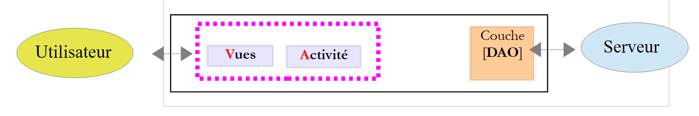 |
Die [DAO]-Schicht kommuniziert mit dem Server, der die auf dem Android-Tablet angezeigten Zufallszahlen generiert. Dieser Server verfügt über die folgende zweistufige Architektur:
 |
Clients fragen bestimmte URLs in der [Web-/JSON]-Schicht ab und erhalten eine Textantwort im JSON-Format (JavaScript Object Notation).
Wir gliedern die Analyse der Anwendung in zwei Schritte:
Der Web-/JSON-Server
- seine [Business]-Schicht;
- seinen mit Spring MVC implementierten [Web-/JSON]-Dienst;
Der Android-Client
- seine [DAO]-Schicht;
- seine Aktivität;
- seine Ansichten;
9.2. Der Webservice / JSON
Hinweis: Der Webservice / JSON wird mithilfe der Spring-MVC-Technologie implementiert. Leser, die mit dieser Technologie nicht vertraut sind, können entweder:
- einfach Abschnitt 9.2.1 lesen, in dem erklärt wird, wie man den Server startet und wie man Abfragen an ihn stellt;
- das Dokument [Spring MVC and Thymeleaf by Example] konsultieren, insbesondere Kapitel 4, in dem die wichtigsten im Code verwendeten Annotationen vorgestellt werden;
9.2.1. Das IntelliJ IDEA-Projekt
Der Webservice / JSON weist folgende Architektur auf:
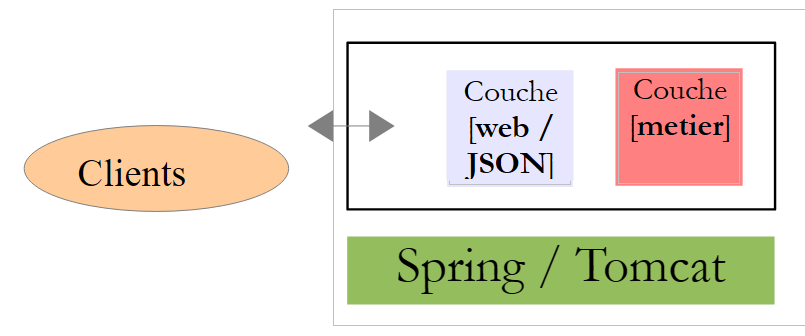 |
Diese Architektur wird durch das folgende IntelliJ IDEA-Projekt [1] implementiert:
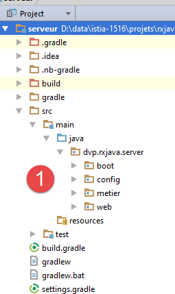 |  |
Der Server wird über [2-3] gestartet. Anschließend werden die Konsolenprotokolle angezeigt:
- Zeile 12: gibt an, dass der Dienst auf Port 8080 verfügbar ist;
- Zeile 10: die eindeutige URL des Webdienstes / JSON, der über einen HTTP-GET-Aufruf verfügbar ist. Seine Parameter lauten wie folgt:
- [a,b]: Bereich für die Erzeugung von Zufallszahlen;
- [minCount, maxCount]: Anzahl der zu generierenden Zufallszahlen, wobei count eine Zufallszahl im Intervall [minCount, maxCount] ist;
- [minDelay, maxDelay]: Der Dienst wartet delay Millisekunden, bevor er die angeforderten Zahlen zurückgibt, wobei delay eine Zufallszahl im Intervall [minDelay, maxDelay] ist;
Rufen wir diese URL in einem Browser auf:
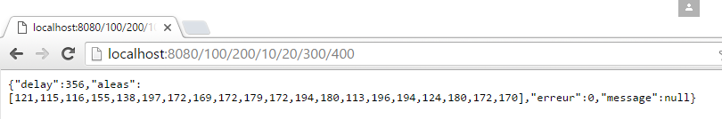 |
Wir haben angefordert:
- Zufallszahlen im Intervall [100, 200];
- n Zufallszahlen, wobei n im Intervall [10, 20] liegt;
- eine Wartezeit von x Millisekunden, wobei x im Intervall [300, 400] liegt;
In der Antwort:
- aleas: Liste der generierten Zufallszahlen;
- delay: die vom Server festgelegte Wartezeit in Millisekunden;
- error: ein Fehlercode – 0, wenn kein Fehler vorliegt;
- message: eine Fehlermeldung – null, wenn kein Fehler vorliegt;
9.2.2. Die Gradle-Abhängigkeiten des Projekts
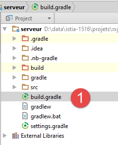 |
Das [server]-Projekt ist ein Gradle-Projekt, das durch die folgende [build.gradle]-Datei konfiguriert wird [1]:
// généré par http://start.spring.io/ (mai 2016)
buildscript {
ext {
springBootVersion = '1.3.5.RELEASE'
}
repositories {
mavenCentral()
}
dependencies {
classpath("org.springframework.boot:spring-boot-gradle-plugin:${springBootVersion}")
}
}
apply plugin: 'java'
apply plugin: 'spring-boot'
jar {
baseName = 'serveur'
version = '0.0.1-SNAPSHOT'
}
sourceCompatibility = 1.8
targetCompatibility = 1.8
repositories {
mavenCentral()
}
dependencies {
compile('org.springframework.boot:spring-boot-starter-web')
}
- Zeile 1: Ein Kommentar, der erklärt, wie diese Konfigurationsdatei generiert wurde;
- Zeilen 4 und 10: eine Abhängigkeit vom [Spring Boot]-Framework, einem Zweig des Spring-Ökosystems. Dieses [http://projects.spring.io/spring-boot/]-Framework ermöglicht eine minimale Spring-Konfiguration. Basierend auf den im Klassenpfad des Projekts vorhandenen Bibliotheken leitet [Spring Boot] eine plausible oder wahrscheinliche Konfiguration für das Projekt ab. Befindet sich also Hibernate im Klassenpfad des Projekts, so schließt [Spring Boot] daraus, dass die verwendete JPA-Implementierung Hibernate ist, und konfiguriert Spring entsprechend. Der Entwickler muss dies nicht mehr tun. Er muss lediglich die Einstellungen konfigurieren, die [Spring Boot] nicht standardmäßig konfiguriert hat, oder diejenigen, die [Spring Boot] zwar standardmäßig konfiguriert hat, die aber noch spezifiziert werden müssen. In jedem Fall hat die vom Entwickler vorgenommene Konfiguration Vorrang;
- Zeilen 14–15: zwei Gradle-Plugins, die erforderlich sind, um den Inhalt dieser Gradle-Datei zu nutzen;
- Zeilen 17–20: Definieren die Eigenschaften des für dieses Projekt generierten Archivs;
- Zeilen 22–23: für die Kompatibilität mit Java 8;
- Zeilen 25–27: Abhängigkeiten werden im globalen Maven-Repository oder im lokalen Repository auf dem Rechner gesucht;
- Zeile 30: definiert eine Abhängigkeit vom Artefakt [spring-boot-starter-web]. Dieses Artefakt enthält alle für ein Spring-MVC-Projekt erforderlichen Archive. Darunter befindet sich das Tomcat-Server-Archiv. Dieses wird für die Bereitstellung der Webanwendung verwendet. Beachten Sie, dass die Version der Abhängigkeit nicht angegeben wurde. Es wird die im importierten [spring-boot]-Projekt angegebene Version verwendet;
Um das Projekt zu aktualisieren, müssen Sie den Download der Abhängigkeiten [1-3] erzwingen:
 |   |
Sehen wir uns [4] die in dieser [build.gradle]-Datei enthaltenen Abhängigkeiten an:
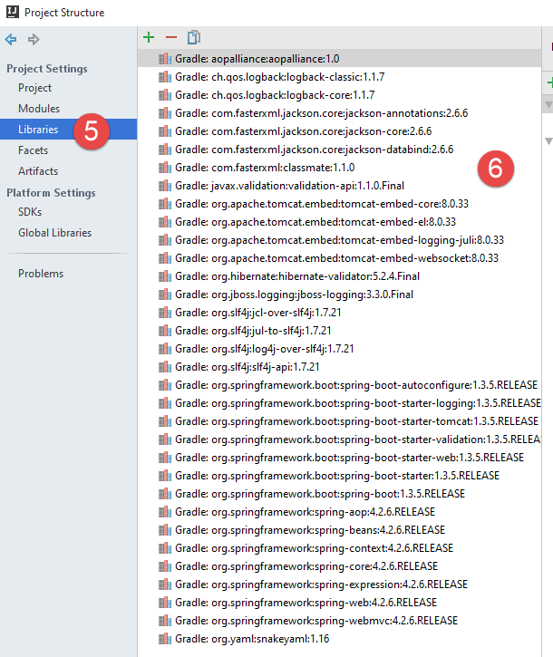 |
Es gibt eine ganze Menge davon. Spring Boot für das Web enthält bereits die Abhängigkeiten, die eine Spring-MVC-Webanwendung wahrscheinlich benötigt. Das bedeutet, dass einige davon möglicherweise überflüssig sind. Spring Boot eignet sich ideal für ein Tutorial:
- Es enthält die Abhängigkeiten, die wir wahrscheinlich benötigen werden;
- wir werden sehen, dass es die Konfiguration des Spring-MVC-Projekts erheblich vereinfacht;
- es enthält einen eingebetteten Tomcat-Server [1], wodurch wir uns die Bereitstellung der Anwendung auf einem externen Webserver sparen;
- es ermöglicht uns, eine ausführbare JAR-Datei zu generieren, die alle oben genannten Abhängigkeiten enthält. Diese JAR-Datei kann ohne Neukonfiguration von einer Plattform auf eine andere übertragen werden.
Auf der Website des Spring-Ökosystems [http://spring.io/guides] finden Sie viele Beispiele für die Verwendung von Spring Boot. Da wir nun die Abhängigkeiten des Projekts kennen, können wir uns dem Code zuwenden.
9.2.3. Die [Business]-Schicht
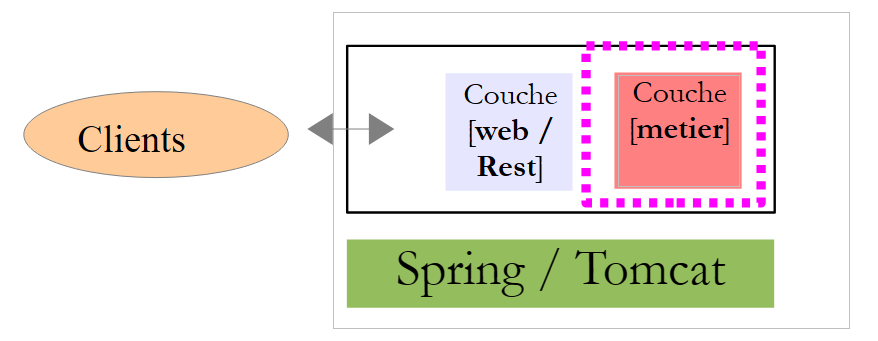 |
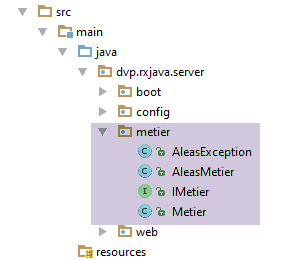 |
Die [Business]-Schicht wird über die folgende [IMetier]-Schnittstelle verfügen:
package dvp.rxjava.server.metier;
public interface IMetier {
// random numbers in the [a,b] interval
// n numbers are generated with n itself a random number in the interval [minCount, maxCount]
// numbers are generated after a delay of milliseconds,
// where [delay] is itself a random number in the interval [minDelay, maxDelay]
public AleasMetier getAleas(int a, int b, int minCount, int maxCount, int minDelay, int maxDelay);
}
Diese Schnittstelle ist nahezu identisch mit der in Abschnitt 8.4 im Zusammenhang mit der Swing-Umgebung besprochenen. In Zeile 8 gibt die Methode [getAleas] den folgenden Typ [AleasMetier] zurück:
package dvp.rxjava.server.metier;
import java.util.List;
public class AleasMetier {
// fields
private int delay;
private List<Integer> aleas;
// manufacturers
public AleasMetier(){
}
public AleasMetier(int delay, List<Integer> aleas){
this.delay=delay;
this.aleas=aleas;
}
public AleasMetier(AleasMetier aleasMetier){
this.delay=aleasMetier.delay;
this.aleas=aleasMetier.aleas;
}
// getters and setters
...
}
Der Code für die Klasse [Metier], die die Schnittstelle [IMetier] implementiert, lautet wie folgt:
package dvp.rxjava.server.metier;
import com.fasterxml.jackson.core.JsonProcessingException;
import com.fasterxml.jackson.databind.ObjectMapper;
import org.springframework.beans.factory.annotation.Autowired;
import org.springframework.stereotype.Service;
import java.util.*;
@Service
public class Metier implements IMetier {
@Autowired
private ObjectMapper mapper;
@Override
public AleasMetier getAleas(int a, int b, int minCount, int maxCount, int minDelay, int maxDelay) {
// random numbers in the [a,b] interval
// n numbers are generated with n itself a random number in the interval [minCount, maxCount]
// numbers are generated after a delay of milliseconds,
// where [delay] is itself a random number in the interval [minDelay, maxDelay]
// some checks
List<String> messages = new ArrayList<>();
int erreur = 0;
if (a < 0) {
messages.add("Le nombre a de l'intervalle [a,b] de génération doit être supérieur à 0");
erreur |= 2;
}
if (a >= b) {
messages.add("Dans l'intervalle [a,b] de génération, on doit avoir a< b");
erreur |= 4;
}
if (minCount < 0) {
messages.add("Le nombre min de l'intervalle [min,count] du nombre de valeurs générées doit être supérieur à 0");
erreur |= 16;
}
if (minCount > maxCount) {
messages.add("Dans l'intervalle [min,count] du nombre de valeurs générées, on doit avoir min<= max");
erreur |= 32;
}
if (minDelay < 0) {
messages.add("Le nombre min de l'intervalle [min,count] du délai d'attente doit être supérieur à 0");
erreur |= 64;
}
if (minCount > maxCount) {
messages.add("Dans l'intervalle [min,count] du délai d'attente, on doit avoir min<= max");
erreur |= 128;
}
if (maxDelay > 5000) {
messages.add("L'attente en millisecondes avant la génération des nombres doit être dans l'intervalle [0,5000]");
erreur |= 256;
}
// mistakes?
if (!messages.isEmpty()) {
throw new AleasException(String.join(" [---] ", messages), erreur);
}
// random number generator
Random random = new Random();
// waiting?
int delay = minDelay + random.nextInt(maxDelay - minDelay + 1);
if (delay > 0) {
try {
Thread.sleep(delay);
} catch (InterruptedException e) {
String message = null;
try {
message = mapper.writeValueAsString(Arrays.asList(String.format("[%s : %s]", e.getClass().getName(), e.getMessage())));
} catch (JsonProcessingException e1) {
throw new AleasException(e1,512);
}
throw new AleasException(message, 1024);
}
}
// result generation
int count = minCount + random.nextInt(maxCount - minCount + 1);
List<Integer> nombres = new ArrayList<Integer>();
for (int i = 0; i < count; i++) {
nombres.add(a + random.nextInt(b - a + 1));
}
// return result
return new AleasMetier(delay,nombres);
}
}
Wir werden die Klasse nicht näher erläutern: Sie ähnelt derjenigen, die wir in Abschnitt 8.4 in der Swing-Umgebung kennengelernt haben. Wir möchten lediglich auf folgende Punkte hinweisen:
- Zeile 10: Die Spring-Annotation [@Service], die bewirkt, dass Spring die Klasse als Einzelinstanz (Singleton) instanziiert und ihre Referenz anderen Spring-Komponenten zur Verfügung stellt. Hier hätten auch andere Spring-Annotationen verwendet werden können, um denselben Effekt zu erzielen;
- Zeilen 13–14: Ein JSON-Mapper wird injiziert. Spring ist ein Objektcontainer. Dieser Container wird beim Start der Webanwendung instanziiert, und die in einer Konfigurationsdatei definierten Objekte werden anschließend instanziiert, standardmäßig als einzelne Instanz (Singleton). Ein Spring-Singleton kann Referenzen auf andere Spring-Objekte enthalten. Dies ist hier der Fall: Das [business]-Singleton (Zeilen 10–11) verfügt über eine Referenz auf das [mapper]-Singleton (Zeilen 13–14). Dies wird als Dependency Injection bezeichnet. Es gibt zwei Möglichkeiten, ein Singleton in ein anderes Singleton zu injizieren:
- nach Typ: Dies ist möglich, wenn das einzubindende Singleton das einzige Spring-Objekt dieses Typs ist. Dies ist hier bei der Einbindung in den Zeilen 13–14 (Typ ObjectMapper) der Fall;
- über seinen Namen, wenn mehrere Spring-Objekte denselben Typ haben. In diesem Fall müssen Sie die Annotation @Qualifier("singletonName") hinzufügen, um den Namen des Singletons anzugeben;
Die Klasse [Metier] löst Ausnahmen vom Typ [AleaException] aus:
package android.exemples.server.metier;
public class AleaException extends RuntimeException {
// error code
private int code;
// manufacturers
public AleaException() {
}
public AleaException(String detailMessage, int code) {
super(detailMessage);
this.code = code;
}
public AleaException(Throwable throwable, int code) {
super(throwable);
this.code = code;
}
public AleaException(String detailMessage, Throwable throwable, int code) {
super(detailMessage, throwable);
this.code = code;
}
// getters and setters
public int getCode() {
return code;
}
public void setCode(int code) {
this.code = code;
}
}
- Zeile 3: [AleasException] erweitert die Klasse [RuntimeException]. Es handelt sich daher um eine nicht behandelte Ausnahme (es besteht keine Notwendigkeit, sie mit try/catch zu behandeln);
- Zeile 6: Der Klasse [RuntimeException] wird ein Fehlercode hinzugefügt;
9.2.4. Der Webdienst / JSON
 |
 |
Der Webdienst / JSON wird von Spring MVC implementiert. Spring MVC implementiert das MVC-Architekturmuster (Model–View–Controller) wie folgt:
 |
Die Verarbeitung einer Client-Anfrage verläuft wie folgt:
- Anfrage – die angeforderten URLs haben die Form http://machine:port/contexte/Action/param1/param2/....?p1=v1&p2=v2&... Das [Dispatcher-Servlet] ist die Spring-Klasse, die eingehende URLs verarbeitet. Es „leitet“ die URL an die Aktion weiter, die sie verarbeiten muss. Diese Aktionen sind Methoden bestimmter Klassen, die als [Controller] bezeichnet werden. Das C in MVC steht hier für die Kette [Dispatcher-Servlet, Controller, Aktion]. Wenn keine Aktion für die Verarbeitung der eingehenden URL konfiguriert wurde, antwortet das [Dispatcher-Servlet], dass die angeforderte URL nicht gefunden wurde (404 NOT FOUND-Fehler);
- Bei der Verarbeitung
- Die ausgewählte Aktion kann die Parameter verwenden, die ihr vom [Dispatcher Servlet] übergeben wurden. Diese können aus verschiedenen Quellen stammen:
- dem Pfad [/param1/param2/...] der URL,
- die URL-Parameter [p1=v1&p2=v2],
- aus Parametern, die der Browser mit seiner Anfrage übermittelt hat;
- Bei der Verarbeitung der Benutzeranfrage benötigt die Aktion möglicherweise die [Business]-Schicht [2b]. Sobald die Anfrage des Clients verarbeitet wurde, kann dies verschiedene Antworten auslösen. Ein klassisches Beispiel ist:
- eine Fehlerseite, wenn die Anfrage nicht korrekt verarbeitet werden konnte
- ansonsten eine Bestätigungsseite
- die Aktion weist an, eine bestimmte Ansicht anzuzeigen [3]. Diese Ansicht zeigt Daten an, die als View-Modell bezeichnet werden. Dies ist das M in MVC. Die Aktion erstellt dieses M-Modell [2c] und weist an, eine V-Ansicht anzuzeigen [3];
- Antwort – die ausgewählte Ansicht V verwendet das von der Aktion erstellte Modell M, um die dynamischen Teile der HTML-Antwort zu initialisieren, die sie an den Client senden muss, und sendet dann diese Antwort.
Bei einem Webdienst / JSON wird die vorstehende Architektur leicht modifiziert:
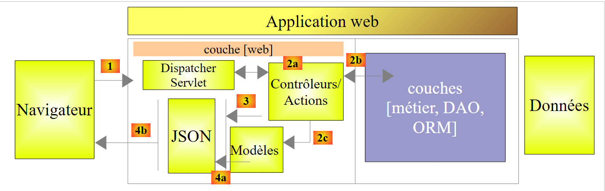 |
- In [4a] wird das Modell, bei dem es sich um eine Java-Klasse handelt, durch eine JSON-Bibliothek in eine JSON-Zeichenkette umgewandelt;
- in [4b] wird diese JSON-Zeichenkette an den Browser gesendet;
Kehren wir zur [Web]-Schicht unserer Anwendung zurück:
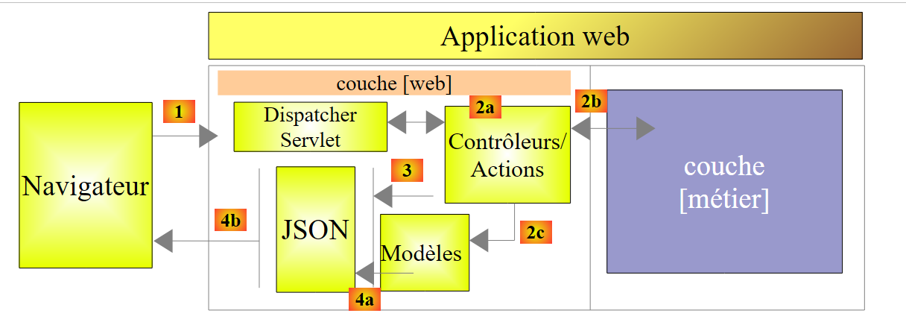 |
In unserer Anwendung gibt es nur einen Controller:
|
Der Webdienst / JSON sendet seinen Clients eine Antwort vom Typ [AleasResponse] wie folgt:
package dvp.rxjava.server.web;
import dvp.rxjava.server.metier.AleasMetier;
public class AleasResponse extends AleasMetier {
// error code
private int erreur;
// error message
private String message;
// manufacturers
public AleasResponse() {
}
public AleasResponse(int erreur, String message, AleasMetier aleasMetier) {
super(aleasMetier);
this.erreur = erreur;
this.message = message;
}
// getters and setters
public void setAleasMetier(AleasMetier aleasMetier) {
this.setDelay(aleasMetier.getDelay());
this.setAleas(aleasMetier.getAleas());
}
...
}
- Zeile 5: Die Klasse [AleasResponse] erweitert die Klasse [AleasMetier] und erbt daher alle deren Attribute (aleas, delay);
- Zeile 8: ein Fehlercode (0, wenn kein Fehler vorliegt);
- Zeile 10: Wenn error != 0, eine Fehlermeldung; null, wenn kein Fehler vorliegt;
Der Controller [AleasController] sieht wie folgt aus:
package dvp.rxjava.server.web;
import org.springframework.beans.factory.annotation.Autowired;
import org.springframework.stereotype.Controller;
import org.springframework.web.bind.annotation.PathVariable;
import org.springframework.web.bind.annotation.RequestMapping;
import org.springframework.web.bind.annotation.RequestMethod;
import org.springframework.web.bind.annotation.ResponseBody;
import com.fasterxml.jackson.core.JsonProcessingException;
import com.fasterxml.jackson.databind.ObjectMapper;
import dvp.rxjava.server.metier.AleasException;
import dvp.rxjava.server.metier.IMetier;
@Controller
public class AleasController {
// business layer
@Autowired
private IMetier metier;
@Autowired
private ObjectMapper mapper;
// random numbers in [a,b]
// n numbers are generated with n in the range [minCount, maxCount]
// numbers are generated after a delay of milliseconds,
// where [delay] is a random number in the range [minDelay, maxDelay]
@RequestMapping(value = "/{a}/{b}/{minCount}/{maxCount}/{minDelay}/{maxDelay}", method = RequestMethod.GET, produces = "application/json")
@ResponseBody
public String getAleas(@PathVariable("a") int a, @PathVariable("b") int b, @PathVariable("minCount") int minCount,
@PathVariable("maxCount") int maxCount, @PathVariable("minDelay") int minDelay,
@PathVariable("maxDelay") int maxDelay) throws JsonProcessingException {
// we prepare the answer
AleasResponse response = new AleasResponse();
// the business layer is used to generate random numbers
try {
response.setAleasMetier(metier.getAleas(a, b, minCount, maxCount, minDelay, maxDelay));
} catch (AleasException e) {
// case of error (code and message)
response.setErreur(e.getCode());
response.setMessage(e.getMessage());
}
// we return the answer jSON
return mapper.writeValueAsString(response);
}
}
- Zeile 16: Die Annotation [@Controller] macht die Klasse [AleasController] zu einem Spring-Singleton. Sie gibt außerdem an, dass die Klasse Methoden enthält, die Anfragen für bestimmte URLs in der Webanwendung bearbeiten. Hier gibt es nur eine in Zeile 29;
- Zeilen 20–21: Die Annotation [@Autowired] weist Spring an, eine Komponente vom Typ [IMetier] in das Feld zu injizieren. Dabei handelt es sich um die zuvor definierte Klasse [Metier]. Da wir ihr die Annotation [@Service] hinzugefügt haben, wird sie als Spring-Komponente behandelt;
- Zeilen 22–23: Die Annotation [@Autowired] weist Spring an, eine Komponente vom Typ [ObjectMapper] in das Feld zu injizieren. Wir werden diese in Kürze definieren;
- Zeile 31: Die Methode [getAleas] generiert Zufallszahlen. Ihr Name ist irrelevant. Bei ihrer Ausführung sind die Parameter in den Zeilen 31–33 bereits von Spring MVC initialisiert worden. Wir werden sehen, wie. Außerdem wird sie ausgeführt, weil der Webserver eine HTTP-GET-Anfrage für die URL in Zeile 29 erhalten hat (Methode-Attribut);
- Zeile 30: Die Annotation [@ResponseBody] gibt an, dass das Ergebnis der Methode unverändert an den Client gesendet werden muss. Hier senden wir ihm eine Zeichenkette, die die JSON-Zeichenkette vom Typ [AleasResponse] sein wird;
- Zeile 29: Die verarbeitete URL hat die Form /{a}/{b}/{minCount}/{maxCount}/{minDelay}/{maxDelay}, wobei {x} für eine Variable steht. Diese verschiedenen Variablen werden in den Zeilen 32–33 den Parametern der Methode zugewiesen. Dies geschieht über die Annotation @PathVariable("x"). Beachten Sie, dass die {x}-Werte Bestandteile einer URL sind und daher vom Typ String sind. Die Konvertierung von String in den Parametertyp der Methode kann fehlschlagen. Spring MVC löst dann eine Ausnahme aus. Zusammenfassend lässt sich sagen: Wenn ich die URL /100/200/10/20/300/400 in einem Browser aufrufe, wird die Methode getAleas in Zeile 31 mit den Parametern a=100 (Zeile 31), b=200 (Zeile 31), minCount=10 (Zeile 31), maxCount=20 (Zeile 32), minDelay=300 (Zeile 32), maxDelay=400 (Zeile 33);
- Zeile 39: Wir fordern eine Liste von Zufallszahlen von der [business]-Schicht an. Beachten Sie, dass die Methode [business].getRandom eine Ausnahme auslösen kann;
- Zeilen 42–43: Fehlerbehandlung;
- Zeile 46: Die [AleasResponse]-Antwort wird als JSON-String zurückgegeben;
9.2.5. Spring-Projektkonfiguration
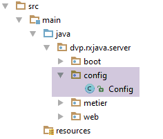 |
Es gibt verschiedene Möglichkeiten, Spring zu konfigurieren:
- mithilfe von XML-Dateien;
- mit Java-Code;
- durch eine Kombination aus beidem;
Wir entscheiden uns dafür, unsere Webanwendung mithilfe von Java-Code zu konfigurieren. Die oben gezeigte [Config]-Klasse übernimmt diese Konfiguration:
package dvp.rxjava.server.config;
import com.fasterxml.jackson.databind.ObjectMapper;
import org.springframework.beans.factory.annotation.Autowired;
import org.springframework.boot.context.embedded.EmbeddedServletContainerFactory;
import org.springframework.boot.context.embedded.ServletRegistrationBean;
import org.springframework.boot.context.embedded.tomcat.TomcatEmbeddedServletContainerFactory;
import org.springframework.context.ApplicationContext;
import org.springframework.context.annotation.Bean;
import org.springframework.context.annotation.ComponentScan;
import org.springframework.web.context.WebApplicationContext;
import org.springframework.web.servlet.DispatcherServlet;
import org.springframework.web.servlet.config.annotation.EnableWebMvc;
@ComponentScan(basePackages = { "dvp.rxjava.server.metier", "dvp.rxjava.server.web" })
@EnableWebMvc
public class Config {
// -------------------------------- layer configuration [web]
@Autowired
private ApplicationContext context;
@Bean
public DispatcherServlet dispatcherServlet() {
DispatcherServlet servlet = new DispatcherServlet((WebApplicationContext) context);
return servlet;
}
@Bean
public ServletRegistrationBean servletRegistrationBean(DispatcherServlet dispatcherServlet) {
return new ServletRegistrationBean(dispatcherServlet, "/*");
}
@Bean
public EmbeddedServletContainerFactory embeddedServletContainerFactory() {
return new TomcatEmbeddedServletContainerFactory("", 8080);
}
// mapper jSON
@Bean
public ObjectMapper jsonMapper() {
return new ObjectMapper();
}
}
- Zeile 15: Wir teilen Spring mit, in welchen Paketen es Objekte zum Instanziieren findet. Es findet zwei:
- die mit [@Service] annotierte [Metier]-Klasse;
- die Klasse [AleasController], die mit [@Controller] annotiert ist;
- Zeile 16: Die Annotation [@EnableWebMvc] löst automatische Konfigurationen für das Spring-MVC-Framework aus;
- Zeilen 19–20: Injektion des Spring-Kontexts (Container für Spring-Objekte). Diese Injektion ist notwendig, da das Objekt in den Zeilen 22–26 sie benötigt;
- die Spring-Konfigurationsdatei kann neue Spring-Objekte mithilfe von Methoden definieren, die mit [@Bean] annotiert sind. Das Ergebnis der Methode wird dann zu einem Spring-Objekt;
- Zeilen 22–26: Definition des Servlets des Spring MVC-Frameworks, das HTTP-Anfragen an den richtigen Controller und die richtige Methode weiterleitet. [DispatcherServlet] ist eine Spring-Klasse;
- Zeilen 28–31: Hier wird festgelegt, dass dieses Servlet alle URLs verarbeitet;
- Zeilen 33–36: Das Vorhandensein dieses Beans aktiviert den in den Projektarchiven enthaltenen Tomcat-Server. Er wartet auf Anfragen am Port 8080;
- Zeilen 39–42: ein JSON-Mapper. Dieser wurde in die Spring-Objekte [Metier] und [AleasController] injiziert;
9.2.6. Ausführen des Webservers
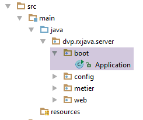 |
Das Projekt wird über die folgende ausführbare Klasse [Application] ausgeführt:
package android.exemples.server.boot;
import android.exemples.server.config.Config;
import org.springframework.boot.SpringApplication;
public class Application {
public static void main(String[] args) {
// application execution
SpringApplication.run(Config.class, args);
}
}
- Zeile 6: Die Klasse [Application] ist eine ausführbare Klasse (Zeilen 7–10);
- Zeile 9: Die statische Methode [SpringApplication.run] ist eine Methode aus [Spring Boot] (Zeile 4), die die Anwendung startet. Ihr erster Parameter ist die Java-Klasse, die das Projekt konfiguriert. Hier ist es die soeben beschriebene Klasse [Config]. Der zweite Parameter ist das Array der Argumente, die an die Methode [main] übergeben werden (Zeile 7). Hier gibt es keine Argumente;
Für die eigentliche Ausführung wird der Leser auf Abschnitt 9.2.1 verwiesen.
9.3. Der Android-Client
Hinweis: Das folgende Android-Projekt ist recht komplex. Es erfordert fundierte Kenntnisse über Android, die beispielsweise in [Einführung in die Android-Tablet-Programmierung mit Android Studio] vermittelt werden.
ActivityViewsLayer[DAO]UserServer
Der Client wird aus zwei Komponenten bestehen:
- eine [Präsentationsschicht] (Ansichten + Aktivität);
- eine [DAO]-Schicht, die mit dem zuvor behandelten [Web-/JSON]-Dienst kommuniziert.
9.3.1. RxAndroid
Um asynchron mit dem Zufallszahlenserver zu kommunizieren, wird der Android-Client die RxAndroid-Bibliothek verwenden. Diese Bibliothek erweitert RxJava auf das Android-Ökosystem. Wie bei der Swing-Anwendung werden wir nur eine einzige von RxAndroid bereitgestellte Erweiterung verwenden: den Scheduler [AndroidSchedulers.mainThread()]. Eine Android-GUI folgt denselben Regeln wie eine Swing-Oberfläche:
- Ereignisse werden in einem einzigen Thread verarbeitet, der als Ereignisschleife oder UI-Thread bezeichnet wird;
- wenn ein Ereignis asynchrone Aktionen auslöst, müssen die Ergebnisse dieser Aktionen im UI-Thread abgerufen werden, wenn sie zur Aktualisierung der Benutzeroberfläche verwendet werden sollen;
Der Android-Client:
- sendet mehrere asynchrone Anfragen an den Zufallszahlenserver. Diese Anfragen werden auf der Client-Seite unter Verwendung der Threads des Schedulers [Schedulers.io()] ausgeführt;
- Diese asynchronen Anfragen geben Observables zurück, die zu einem einzigen Observable zusammengeführt werden;
- Dieses Observable wird auf der Client-Seite im Scheduler [AndroidSchedulers.mainThread()] beobachtet, der von RxAndroid bereitgestellt wird;
9.3.2. Das IntelliJ IDEA-Projekt
Das Android-Projekt heißt [client]:
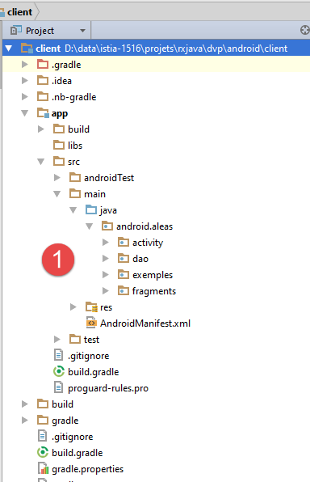 |  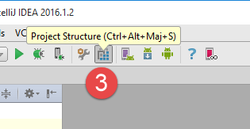 |
Es wird über [2] ausgeführt.
Hinweis: Die Ausführung hängt stark von der Konfiguration der verwendeten IntelliJ IDEA-IDE ab. Es ist wahrscheinlich, dass die oben beschriebene Ausführung [2] auf einem anderen Rechner als meinem eigenen nicht auf Anhieb funktioniert. Die richtige Konfiguration der IntelliJ IDEA-IDE für die Ausführung dieses Projekts kann für Anfänger eine Herausforderung darstellen. Hier sind einige Punkte, die Sie beachten sollten:
- Rufen Sie in [3] die Projektstruktur auf;
 |  |
- in [4-5] die auf meinem Rechner installierten JDK- und Android-SDKs. Beachten Sie, dass JDK 1.8 nicht zwingend erforderlich ist. Android unterstützt bestimmte Java-8-Funktionen, darunter Lambdas, nicht. Um funktionale Schnittstellen zu instanziieren, werden wir daher anonyme Klassen verwenden. Ein JDK 1.6 ist daher ausreichend. Das Projekt wurde jedoch in der bereitgestellten Form mit einem JDK 1.8 konfiguriert;
Die Datei [build.gradle] [6], die das Android-Projekt konfiguriert, sieht wie folgt aus:
buildscript {
repositories {
mavenCentral()
mavenLocal()
}
dependencies {
// replace with the current version of the Android plugin
classpath 'com.android.tools.build:gradle:1.5.0'
}
}
apply plugin: 'com.android.application'
dependencies {
compile 'com.android.support:appcompat-v7:23.1.1'
compile 'com.android.support:design:23.1.1'
compile fileTree(dir: 'libs', include: ['*.jar'])
compile 'org.springframework.android:spring-android-rest-template:1.0.1.RELEASE'
compile 'org.codehaus.jackson:jackson-mapper-asl:1.9.9'
compile 'io.reactivex:rxandroid:1.1.0'
}
repositories {
jcenter()
}
android {
compileSdkVersion 23
buildToolsVersion "23.0.3"
defaultConfig {
applicationId "android.aleas"
minSdkVersion 15
targetSdkVersion 23
versionCode 1
versionName "1.0"
}
buildTypes {
release {
minifyEnabled false
proguardFiles getDefaultProguardFile('proguard-android.txt'), 'proguard-rules.pro'
}
}
compileOptions {
sourceCompatibility JavaVersion.VERSION_1_6
targetCompatibility JavaVersion.VERSION_1_6
}
packagingOptions {
exclude 'META-INF/ASL2.0'
exclude 'META-INF/NOTICE'
exclude 'META-INF/LICENSE'
exclude 'META-INF/NOTICE.txt'
exclude 'META-INF/LICENSE.txt'
exclude 'META-INF/notice.txt'
exclude 'META-INF/license.txt'
}
}
Je nach den vorhandenen Android-SDKs müssen die Versionen in den Zeilen 8, 24–25 und 29 möglicherweise angepasst werden.
Um neue Android-SDKs zu installieren, verwenden Sie den SDK-Manager wie folgt [1]:
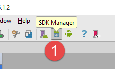 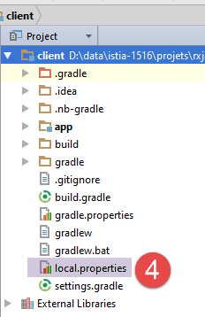 | 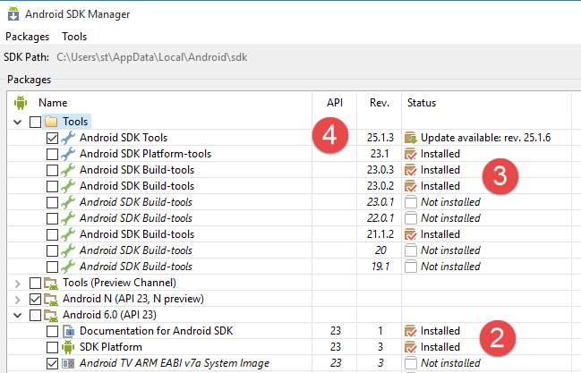 |
Das Projekt wurde für folgende Version konfiguriert:
- SDK API 23 [2];
- SDK-Build-Tools 23.0.3 [3];
- SDK-Tool 25.1.3 [4]
Überprüfen Sie abschließend den Android-SDK-Pfad in der Datei [local.properties] [4], Zeile 11 unten:
## This file is automatically generated by Android Studio.
# Do not modify this file -- YOUR CHANGES WILL BE ERASED!
#
# This file must *NOT* be checked into Version Control Systems,
# as it contains information specific to your local configuration.
#
# Location of the SDK. This is only used by Gradle.
# For customization when using a Version Control System, please read the
# header note.
#Thu Apr 07 14:51:14 CEST 2016
sdk.dir=C\:\\Users\\st\\AppData\\Local\\Android\\sdk
9.3.3. Ausführen des IntelliJ IDEA-Projekts
Sobald eine geeignete Umgebung für das Projekt erstellt wurde, kann es wie folgt ausgeführt werden:
 | 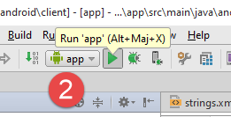 | 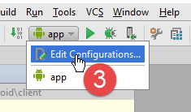 |
- Starten Sie in [1] den Genymotion-Android-Emulator;
- Führen Sie in [2] die Laufkonfiguration [app] aus;
- in [3], um eine Ausführungskonfiguration zu erstellen;
 |
- In [1, 3] wurde die Konfiguration [app] genannt;
- in [2] entspricht sie der Ausführung des Moduls mit dem Namen [app];
- in [4] legen wir fest, dass uns die IDE während der Ausführung ein Ausführungsgerät zur Verfügung stellen soll. Hier wird dies immer der Genymotion-Emulator sein;
- in [5] legen wir fest, dass dieses Gerät für alle Ausführungen der Konfiguration verwendet werden soll;
Die Ausführung des Projekts auf dem Genymotion-Emulator beginnt mit dem folgenden Startbefehl:
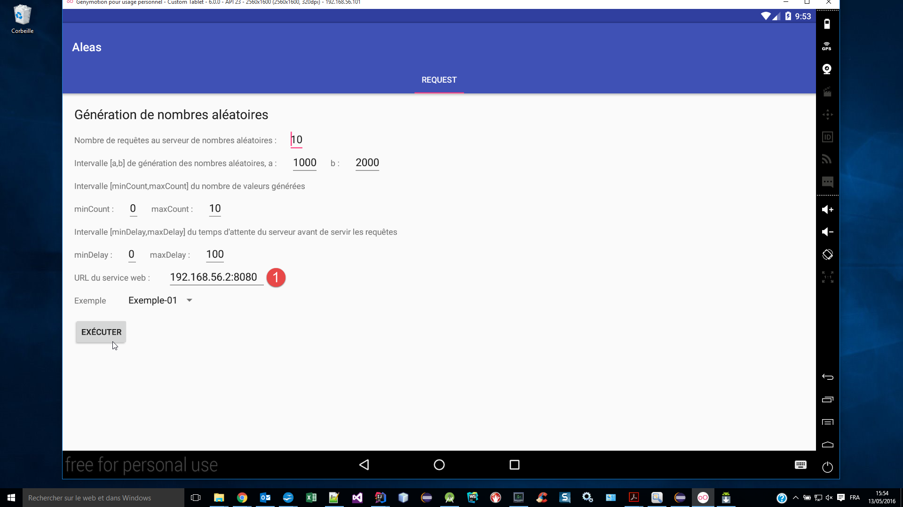
Um herauszufinden, was in [1] eingegeben werden muss, öffnen Sie ein DOS-Befehlsfenster und geben Sie den folgenden [ipconfig]-Befehl ein:
C:\Program Files\Console2>ipconfig
Configuration IP de Windows
Carte Ethernet Ethernet :
Statut du média. . . . . . . . . . . . : Média déconnecté
Suffixe DNS propre à la connexion. . . : ad.univ-angers.fr
Carte réseau sans fil Connexion au réseau local* 3 :
Statut du média. . . . . . . . . . . . : Média déconnecté
Suffixe DNS propre à la connexion. . . :
Carte Ethernet VirtualBox Host-Only Network :
Suffixe DNS propre à la connexion. . . :
Adresse IPv6 de liaison locale. . . . .: fe80::8076:36e6:3b38:5e98%16
Adresse IPv4. . . . . . . . . . . . . .: 192.168.56.2
Masque de sous-réseau. . . . . . . . . : 255.255.255.0
Passerelle par défaut. . . . . . . . . :
Carte Ethernet Ethernet 2 :
Suffixe DNS propre à la connexion. . . :
Adresse IPv6 de liaison locale. . . . .: fe80::d0d9:e01f:ddde:1f4b%14
Adresse IPv4. . . . . . . . . . . . . .: 192.168.95.1
Masque de sous-réseau. . . . . . . . . : 255.255.255.0
Passerelle par défaut. . . . . . . . . :
Carte réseau sans fil Wi-Fi :
Suffixe DNS propre à la connexion. . . :
Adresse IPv6 de liaison locale. . . . .: fe80::54b3:afe5:e199:2206%10
Adresse IPv4. . . . . . . . . . . . . .: 192.168.0.13
Masque de sous-réseau. . . . . . . . . : 255.255.255.0
Passerelle par défaut. . . . . . . . . : fe80::523d:e5ff:fe0c:4ad9 192.168.0.1
Geben Sie [1] für eine der IP-Adressen Ihres Computers ein (Zeilen 20, 28, 32). Wenn Sie eine Windows-Firewall verwenden, müssen Sie diese wahrscheinlich deaktivieren, damit der Android-Emulator den Zufallszahlenserver erreichen kann.
Die Ausführung asynchroner Anfragen mit den oben genannten Informationen führt zu folgenden Ergebnissen:
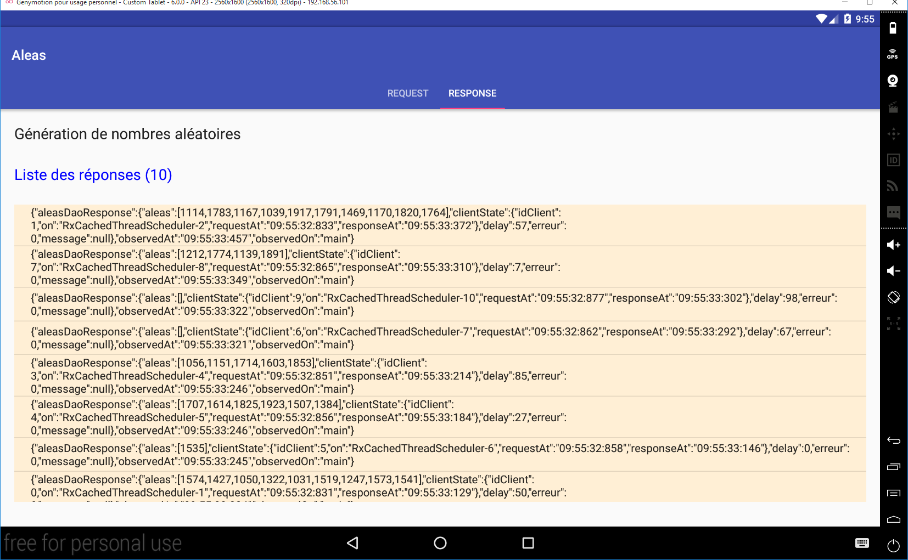
Jede Anfrage gibt eine JSON-Antwort mit den folgenden Feldern zurück:
- aleas: die vom Server generierten Zufallszahlen;
- idClient: die Anfrage-ID;
- on: der clientseitige Thread, der die Anfrage ausführt;
- requestAt: Zeitpunkt der Anfrage;
- responseAt: Zeitpunkt des Empfangs der Antwort;
- delay: die Wartezeit, die der Server vor der Rückgabe seiner Antwort vermerkt hat;
- error: ein Fehlercode – 0, wenn kein Fehler vorliegt;
- message: eine Fehlermeldung – null, wenn kein Fehler vorliegt;
- observedAt: Zeitpunkt, zu dem die Antwort beobachtet wurde;
- beobachtetIn: Thread, der die Antwort beobachtet. Hier ist dies immer [main], was sich auf den UI-Thread bezieht;
Da Anfragen asynchron sind und die Wartezeiten auf dem Server zufällig sind, werden die Antworten in einer ungeordneten Reihenfolge zurückgegeben.
9.3.4. Die Gradle-Abhängigkeiten des Projekts
Das Projekt benötigt Abhängigkeiten, die wir in der Datei [app/build.gradle] angeben:
 |
dependencies {
compile 'com.android.support:appcompat-v7:23.1.1'
compile 'com.android.support:design:23.1.1'
compile fileTree(dir: 'libs', include: ['*.jar'])
compile 'org.springframework.android:spring-android-rest-template:1.0.1.RELEASE'
compile 'org.codehaus.jackson:jackson-mapper-asl:1.9.9'
compile 'io.reactivex:rxandroid:1.1.0'
}
- Die Abhängigkeiten in den Zeilen 2–3 sind Standardabhängigkeiten für ein Android-Projekt, das SDK 23 verwendet;
- Die Abhängigkeit in Zeile 5 bezieht das Spring-Objekt [RestTemplate] ein, das die Kommunikation zwischen der [DAO]-Schicht und dem Server verwaltet;
- Die Abhängigkeit in Zeile 6 bindet die von der Anwendung verwendete JSON-Bibliothek [Jackson] ein;
- Die Abhängigkeit in Zeile 7 bindet die RxAndroid-Bibliothek (und damit die RxJava-Bibliothek) ein, die die UI-Schicht für die Kommunikation mit der [DAO]-Schicht verwendet;
9.3.5. Das Manifest der Android-Anwendung
 |
<?xml version="1.0" encoding="utf-8"?>
<manifest xmlns:android="http://schemas.android.com/apk/res/android"
package="android.aleas">
<uses-permission android:name="android.permission.INTERNET"/>
<application
android:allowBackup="true"
android:icon="@mipmap/ic_launcher"
android:label="@string/app_name"
android:supportsRtl="true"
android:theme="@style/AppTheme">
<activity
android:name="android.aleas.activity.MainActivity"
android:label="@string/app_name"
android:theme="@style/AppTheme.NoActionBar">
<intent-filter>
<action android:name="android.intent.action.MAIN"/>
<category android:name="android.intent.category.LAUNCHER"/>
</intent-filter>
</activity>
</application>
</manifest>
- Zeile 5: Der Internetzugang muss erlaubt sein;
9.3.6. Die [DAO]-Schicht
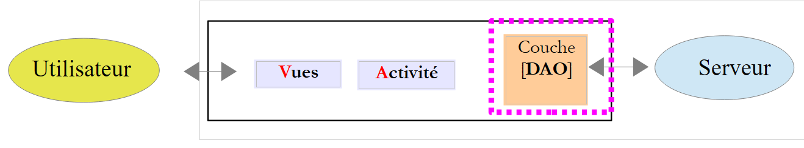 |
 |  |
9.3.6.1. Die [IDao]-Schnittstelle der [DAO]-Schicht
Die Schnittstelle der [DAO]-Schicht sieht wie folgt aus:
package android.aleas.dao;
import android.aleas.fragments.Request;
import rx.Observable;
public interface IDao {
// random numbers in the [a,b] interval
// n numbers are generated with n itself a random number in the interval [minCount, maxCount]
// numbers are generated after a delay of milliseconds,
// where [delay] is itself a random number in the interval [minDelay, maxDelay]
public Observable<AleasDaoResponse> getAleas(final Request request);
// URL of the web service
public void setUrlServiceWebJson(String url);
// max wait time (ms) for server response to connection request
// max wait time (ms) for server response to a request
public void setClientTimeouts(int connectTimeout, int readTimeOut);
}
- Zeile 12: die Methode der [DAO]-Schicht, die asynchron Zufallszahlen generiert;
- Zeile 15: um der [DAO]-Implementierung die URL des Zufallszahlengenerators zu übergeben;
- Zeile 19: Festlegen der maximalen Zeitüberschreitungen für die [DAO]-Implementierung, um übermäßig lange Wartezeiten zu vermeiden, wenn der Server nicht antwortet;
Die [getAleas]-Methode erhält alle ihre Parameter im folgenden [Request]-Objekt:
package android.aleas.fragments;
public class Request {
// request no
int id;
// user input
private int nbRequests;
private int a;
private int b;
private int minCount;
private int maxCount;
private int minDelay;
private int maxDelay;
// manufacturers
public Request() {
}
public Request(int id, int nbRequests, int a, int b, int minCount, int maxCount, int minDelay, int maxDelay) {
this.id = id;
this.nbRequests = nbRequests;
this.a = a;
this.b = b;
this.minCount = minCount;
this.maxCount = maxCount;
this.minDelay = minDelay;
this.maxDelay = maxDelay;
}
// getters and setters
...
}
Hier sehen wir die meisten Parameter aus der Server-URL, die abgefragt werden müssen.
Die Methode [getAleas] gibt einen Typ Observable<AleasDaoResponse> zurück, wobei die Klasse [AleasDaoResponse] wie folgt aussieht:
package android.aleas.dao;
import java.util.List;
public class AleasDaoResponse {
// error code
private int erreur;
// error message
private String message;
// server waiting time
private int delay;
// random numbers delivered by the server
private List<Integer> aleas;
// customer status
private ClientState clientState;
// manufacturers
public AleasDaoResponse() {
}
public AleasDaoResponse(int erreur, String message, int delay, List<Integer> aleas, ClientState clientState) {
this.erreur = erreur;
this.message = message;
this.delay = delay;
this.aleas = aleas;
this.clientState = clientState;
}
// getters and setters
...
}
Der Typ [ClientState] sieht wie folgt aus:
package android.aleas.dao;
import org.codehaus.jackson.map.annotate.JsonFilter;
import java.text.SimpleDateFormat;
import java.util.Calendar;
public class ClientState {
// name of execution thread
private String on;
// query time
private String requestAt;
// response time
private String responseAt;
// customer id
private int idClient;
// manufacturer
public ClientState() {
on = Thread.currentThread().getName();
requestAt = getTimeStamp();
}
public ClientState(int idClient) {
this();
this.idClient = idClient;
}
// private methods
private String getTimeStamp() {
return new SimpleDateFormat("hh:mm:ss:SSS").format(Calendar.getInstance().getTime());
}
// getters and setters
...
}
- Zeile 11: Ausführungsthread der [DAO]-Schicht;
- Zeile 13: Anforderungszeit;
- Zeile 15: Antwortzeit;
- Zeile 17: Anforderungsnummer;
Die Felder [on, requestAt, idClient] werden vom Client zu Beginn der Anfrage initialisiert. Das Feld [responseAt] wird initialisiert, wenn der Client die Antwort vom Server erhält.
9.3.6.2. Implementierung der [DAO]-Schicht
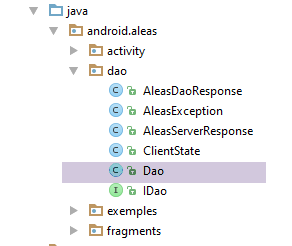 |
Die [IDao]-Schnittstelle wird mit der folgenden [Dao]-Klasse implementiert:
package android.aleas.dao;
import android.aleas.fragments.Request;
import android.util.Log;
import org.codehaus.jackson.map.ObjectMapper;
import org.codehaus.jackson.map.ser.impl.SimpleBeanPropertyFilter;
import org.codehaus.jackson.map.ser.impl.SimpleFilterProvider;
import org.codehaus.jackson.type.TypeReference;
import org.springframework.http.client.HttpComponentsClientHttpRequestFactory;
import org.springframework.http.converter.StringHttpMessageConverter;
import org.springframework.web.client.RestTemplate;
import rx.Observable;
import rx.Subscriber;
import java.util.HashMap;
import java.util.Locale;
import java.util.Map;
public class Dao implements IDao {
// customer REST
private RestTemplate restTemplate;
// URL service
private String urlServiceWebJson;
// mapper jSON
private ObjectMapper mapper;
// manufacturers
public Dao() {
// mapper jSON
mapper = new ObjectMapper();
}
@Override
public Observable<AleasDaoResponse> getAleas(final Request request) {
...
}
@Override
public void setUrlServiceWebJson(String urlServiceWebJson) {
// set the URL of the REST service
this.urlServiceWebJson = urlServiceWebJson;
}
@Override
public void setClientTimeouts(int connectTimeout, int readTimeOut) {
...
}
}
- Zeile 22: das [RestTemplate]-Objekt, das die Kommunikation mit dem Zufallszahlenserver übernimmt;
- Zeile 24: die URL des Generierungsdienstes – festgelegt durch die Methode [setUrlServiceWebJson] in Zeile 41;
- Zeile 27: der JSON-Mapper, der zur Deserialisierung der vom Zufallszahlenserver gesendeten JSON-Zeichenkette verwendet wird;
- Zeilen 30–33: der Klassenkonstruktor;
- Zeile 32: Der JSON-Mapper aus Zeile 27 wird erstellt;
Die Methode [setClientTimeouts] lautet wie folgt:
// client REST
private RestTemplate restTemplate;
...
@Override
public void setClientTimeouts(int connectTimeout, int readTimeOut) {
// on fixe le timeout des requêtes du client REST
HttpComponentsClientHttpRequestFactory factory = new HttpComponentsClientHttpRequestFactory();
factory.setReadTimeout(readTimeOut);
factory.setConnectTimeout(connectTimeout);
restTemplate = new RestTemplate(factory);
restTemplate.getMessageConverters().add(new StringHttpMessageConverter());
}
- Die Kommunikation des Clients mit dem Webserver / JSON wird vom [RestTemplate]-Objekt in Zeile 2 abgewickelt. Wir haben es noch nicht initialisiert. Die Methode [setClientTimeouts] übernimmt dies;
- Zeile 8: Die Klasse [HttpComponentsClientHttpRequestFactory] wird von der Abhängigkeit [spring-android-rest-template] bereitgestellt. Sie ermöglicht es uns, die maximalen Wartezeiten für die Antwort des Servers festzulegen (Zeilen 9–10);
- Zeile 11: Wir erstellen das [RestTemplate]-Objekt, das als Kommunikationskanal zum Webservice dient. Wir übergeben das soeben erstellte [factory]-Objekt als Parameter an dieses;
- Zeile 12: Der Client-Server-Dialog kann verschiedene Formen annehmen. Der Austausch erfolgt über Textzeilen, und wir müssen dem [RestTemplate]-Objekt mitteilen, was es mit dieser Textzeile tun soll. Dazu stellen wir ihm Konverter zur Verfügung – Klassen, die Textzeilen verarbeiten können. Die Auswahl des Konverters erfolgt in der Regel über die HTTP-Header, die die Textzeile begleiten. Anhand dieser Header wählt das [RestTemplate]-Objekt aus seinen Konvertern denjenigen aus, der für die jeweilige Situation am besten geeignet ist. Hier haben wir nur einen einzigen Konverter, einen String --> String-Konverter, was bedeutet, dass der vom Server empfangene String-Typ keiner Umwandlung unterzogen wird.
Die Methode [getAleas] ist die komplexeste:
@Override
public Observable<AleasDaoResponse> getAleas(final Request request) {
Log.d("rxjava", String.format("service [DAO] pour client n° %s%n", request.getId()));
// service execution
return Observable.create(new Observable.OnSubscribe<AleasDaoResponse>() {
@Override
public void call(Subscriber<? super AleasDaoResponse> subscriber) {
try {
// URL of the service: /{a}/{b}/{minCount}/{maxCount}/{minDelay}/{maxDelay}
String urlService = String.format("%s/%s/%s/%s/%s/%s/%s",
urlServiceWebJson, request.getA(), request.getB(), request.getMinCount(),
request.getMaxCount(), request.getMinDelay(), request.getMaxDelay());
// customer information
ClientState clientState = new ClientState(request.getId());
// synchronous http request
String response = executeRestService("get", urlService, null);
// deserialization of jSON server response
AleasServerResponse aleasServerResponse = mapper.readValue(
response,
new TypeReference<AleasServerResponse>() {
});
// mistake?
int erreur = aleasServerResponse.getErreur();
if (erreur != 0) {
// we forward the exception
subscriber.onError(new AleasException(aleasServerResponse.getMessage(), erreur));
} else {
// enter the time of reception
clientState.setResponseAt();
// we forward the result to the subscriber
subscriber.onNext(
new AleasDaoResponse(aleasServerResponse.getErreur(), aleasServerResponse.getMessage(),
aleasServerResponse.getDelay(), aleasServerResponse.getAleas(), clientState));
}
} catch (Exception ex) {
// we forward the exception to the subscriber
subscriber.onError(ex);
} finally {
// we signal the end of the observable
// at runtime, we note that this method has no effect if method [onError] has been called previously - in line with theory - so we could place this instruction only in try
subscriber.onCompleted();
}
}
});
}
- Zeile 2: Beachten Sie, dass wir einen Typ [Observable<AleasResponse>] zurückgeben müssen;
- Zeile 3: Eine Protokollzeile auf der Android-Konsole;
- Zeile 5: Das [RestTemplate]-Objekt gewährleistet die synchrone Kommunikation mit dem Server. Das bedeutet, dass der Ausführungs-Thread, der die Anfrage stellt, blockiert wird, bis die Antwort empfangen wird. Im Swing-Beispiel haben wir gesehen, wie man eine synchrone Aktion mithilfe der Methode [Observable.create] in eine asynchrone umwandelt. Wir verfolgen hier denselben Ansatz;
- Zeile 7: die Methode [call] der Schnittstelle [Observable.OnSubscribe<AleasDaoResponse>] aus Zeile 5. Diese Methode wird aufgerufen, wenn ein Beobachter das Observable abonniert;
- Zeilen 10–12: Erstellung der URL für den Zufallszahlendienst;
- Zeile 14: Initialisierung des [ClientState]-Objekts. Hier erfassen wir den Zeitpunkt der Anfrage;
- Zeile 16: Synchrone HTTP-Anfrage. Es wird eine JSON-Antwort zurückgegeben. Die Methode [executeRestService] erwartet drei Parameter:
- die HTTP-Methode, die zur Abfrage des Dienstes verwendet werden soll;
- die Service-URL;
- das zu sendende Objekt (Typ Object), null, wenn die HTTP-Methode nicht POST ist;
- 18–21: Deserialisierung der empfangenen JSON-Zeichenkette in einen Typ [AleasServerResponse]. Dieser Typ ist wie folgt definiert:
package android.aleas.dao;
import java.util.List;
public class AleasServerResponse {
// error code
private int erreur;
// error message
private String message;
// server waiting time
private int delay;
// random numbers
private List<Integer> aleas;
// getters and setters
...
}
- Zeile 23: Abrufen des vom Server gesendeten Fehlercodes;
- Zeilen 24–26: Wenn ein Fehler auftritt, wird eine Ausnahme an den Abonnenten weitergeleitet;
- Zeile 29: Wir aktualisieren [clientState], das Teil der an den Abonnenten gesendeten Antwort sein wird;
- Zeilen 31–33: Senden der Antwort an den Abonnenten. Sie ist vom Typ [AleasDaoResponse];
- Zeilen 35–37: Alle Fehlerfälle werden unterschiedslos behandelt. Der wahrscheinlichste Fehler ist ein Netzwerkfehler;
- Zeile 41: Benachrichtigung über das Ende der Übertragung;
9.3.7. Anwendungsansichten
 |
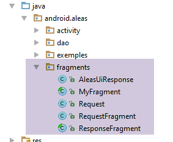 |
Die Anwendung verfügt über die folgenden zwei Ansichten:
Die Anforderungsansicht
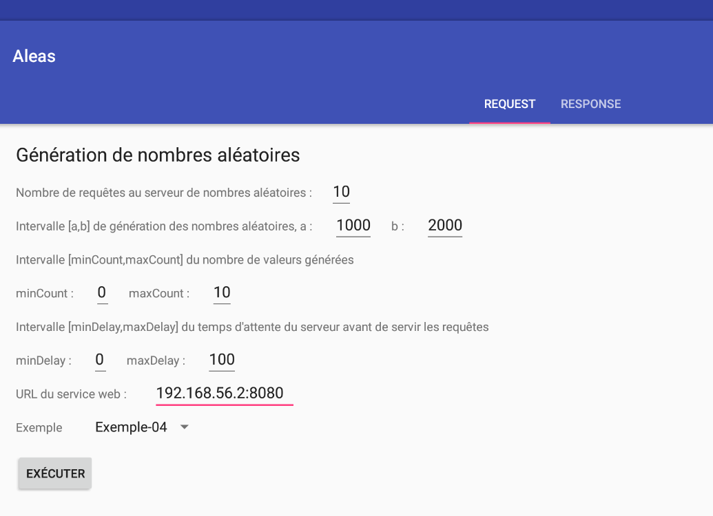
Die Antwortansicht
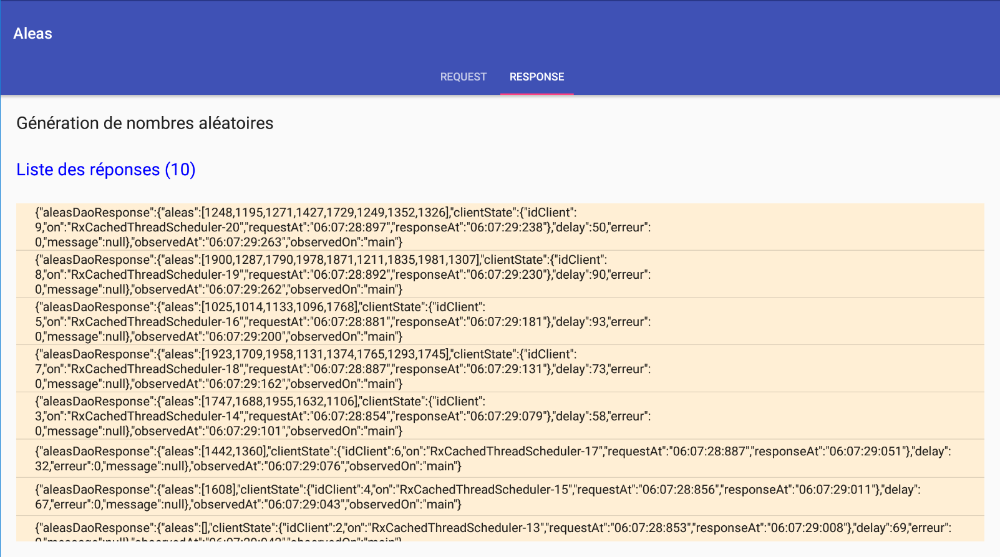
9.3.7.1. Die Klasse [MyFragment]
Es gibt zwei Fragmente:
- [RequestFragment] für die Anfrage;
- [ResponseFragment] für die Antwort;
Beide Fragmente erweitern die folgende Klasse [MyFragment]:
package android.aleas.fragments;
import android.aleas.activity.MainActivity;
import android.aleas.activity.Session;
import android.support.v4.app.Fragment;
public abstract class MyFragment extends Fragment {
// ------------- data common to all fragments
protected MainActivity activity;
protected Session session;
public abstract void onRefresh();
}
- Zeile 7: Die Klasse [MyFragment] erweitert die Android-Klasse [Fragment];
- Zeilen 10–11: Daten, die von allen Fragmenten gemeinsam genutzt werden;
- Zeile 10: Jedes Fragment kennt die einzige Aktivität der Anwendung;
- Zeile 11: Zur Kommunikation untereinander nutzen Fragmente eine Session;
- Zeile 13: Bevor ein Fragment angezeigt wird, wird es aufgefordert, sich mit dem Inhalt der Sitzung zu aktualisieren. Diese Methode ist als abstrakt deklariert, da sie von den Unterklassen implementiert wird. Aus diesem Grund ist die Klasse selbst als abstrakt deklariert (Zeile 7);
Die Klasse [Session] enthält die Daten, die von den verschiedenen Fragmenten der Anwendung gemeinsam genutzt werden. Ihr Code lautet wie folgt:
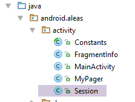 |
package android.aleas.activity;
import android.aleas.fragments.Request;
import android.widget.ArrayAdapter;
public class Session {
// application activity
private MainActivity activity;
// number of requests
private int nbRequests;
// request characteristics
private int a;
private int b;
private int minCount;
private int maxCount;
private int minDelay;
private int maxDelay;
// URL web service / jSON
private String urlWebJson;
// operation began
private boolean onAir;
// idem but a little later in time
private boolean operationStarted;
// the name of the example chosen by the user from the list of examples
private String exampleName;
// its number in the list of fragments
private int examplePosition;
// the example spinner adapter in the query view
private ArrayAdapter<CharSequence> spinnerExemplesAdapter;
// methods
public void setInfos(int nbRequests, int a, int b, int minCount, int maxCount, int minDelay, int maxDelay, String urlWebJson, String exampleName, int examplePosition) {
this.nbRequests = nbRequests;
this.a = a;
this.b = b;
this.minCount = minCount;
this.maxCount = maxCount;
this.minDelay = minDelay;
this.maxDelay = maxDelay;
this.urlWebJson = urlWebJson;
this.exampleName = exampleName;
this.examplePosition = examplePosition;
}
public Request getRequest() {
return new Request(0, nbRequests, a, b, minCount, maxCount, minDelay, maxDelay);
}
// getters and setters
...
}
Die Methode in Zeile 46 erstellt das [Request]-Objekt, das alle vom Benutzer in der Request-Ansicht bereitgestellten Informationen kapselt:
 |
package android.aleas.fragments;
public class Request {
// request no
int id;
// user input
private int nbRequests;
private int a;
private int b;
private int minCount;
private int maxCount;
private int minDelay;
private int maxDelay;
// manufacturers
public Request() {
}
public Request(int id, int nbRequests, int a, int b, int minCount, int maxCount, int minDelay, int maxDelay) {
this.id = id;
this.nbRequests = nbRequests;
this.a = a;
this.b = b;
this.minCount = minCount;
this.maxCount = maxCount;
this.minDelay = minDelay;
this.maxDelay = maxDelay;
}
// getters and setters
....
}
9.3.7.2. Das [RequestFragment]-Fragment der Anfrage
Das Anforderungsfragment besteht aus folgenden Komponenten:
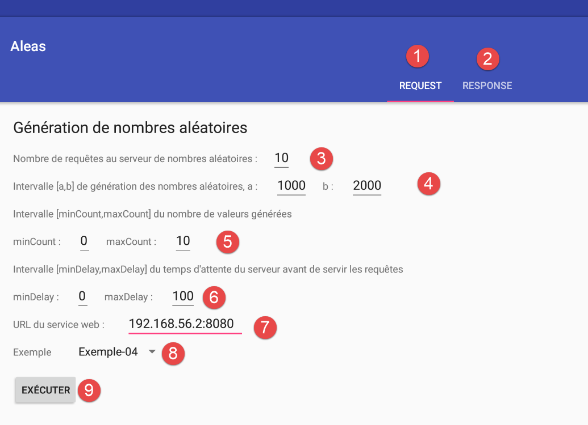
Die Anwendung verfügt über eine einzige Ansicht, die aus zwei Registerkarten besteht:
- [1]: die Registerkarte „Anfrage“;
- [2]: die Registerkarte „Antwort“;
Die Komponenten des Fragments [RequestFragment] sind wie folgt:
Nr. | Typ | Name | Rolle |
3 | EditText | edtNbRequests | Anzahl der Anfragen an den Zufallszahlengenerator-Dienst |
4 | EditText | edtA, edtB | die Grenzen [a,b] des Intervalls für die Zahlengenerierung; |
5 | EditText | edtMinCount, edtMaxCount | Der Dienst generiert count Zahlen, wobei count eine Zufallszahl im Intervall [minCount, maxCount] ist |
6 | EditText | edtMinDelay, edtMaxDelay | Der Dienst wartet delay Millisekunden, bevor er die Zahlen generiert, wobei delay eine Zufallszahl im Bereich [minDelay, maxDelay] ist |
7 | EditText | edtUrlServiceRest | die URL des Dienstes zur Erzeugung von Zufallszahlen; |
8 | Spinner | spinnerExamples | die Dropdown-Liste mit Beispielen. Jedes Beispiel veranschaulicht eine bestimmte Methode der Klasse [Observable]; |
8 | Button | btnExecute | die Schaltfläche, die Aufrufe an den Dienst zur Nummerngenerierung auslöst; |
Eingabefehler werden gemeldet:

Die Komponenten 1 bis 6 sind [TextView]-Komponenten mit den folgenden Namen (in der Reihenfolge): txtErrorRequests, txtErrorInterval, txtErrorCount, txtErrorDelay, txtWebServiceErrorMessage.
9.3.7.3. Das [ResponseFragment]-Fragment der Antwort
Das Antwortfragment besteht aus folgenden Komponenten:
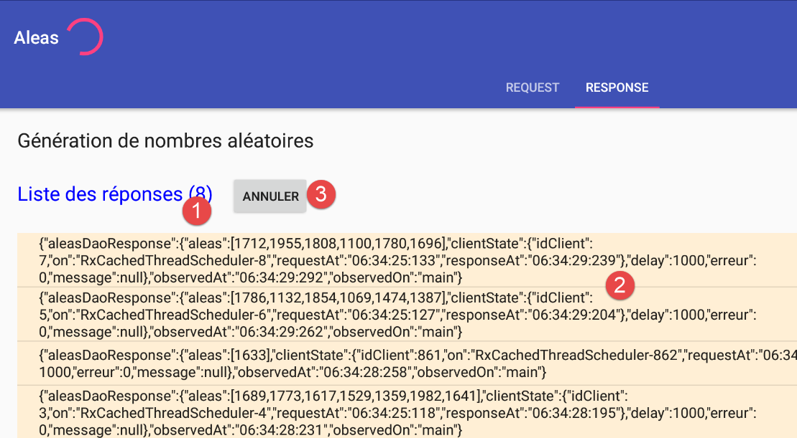
Nr. | Typ | Name | Rolle |
1 | TextView | infoResponses | Anzahl der erhaltenen Antworten |
2 | ListView | listResponses | Liste der vom Server empfangenen JSON-Strings |
3 | Schaltfläche | btnCancel | zum Abbrechen von Anfragen an den Server |
9.3.7.4. Die Android-Aktivität [MainActivity]
 |
 |
Die Klasse [MainActivity] zeigt die folgende Ansicht an:
<?xml version="1.0" encoding="utf-8"?>
<android.support.design.widget.CoordinatorLayout xmlns:android="http://schemas.android.com/apk/res/android"
xmlns:tools="http://schemas.android.com/tools"
xmlns:app="http://schemas.android.com/apk/res-auto"
android:id="@+id/main_content"
android:layout_width="match_parent"
android:layout_height="match_parent"
android:fitsSystemWindows="true"
tools:context="android.arduinos.ui.activity.MainActivity">
<!-- application bar -->
<android.support.design.widget.AppBarLayout
android:id="@+id/appbar"
android:layout_width="match_parent"
android:layout_height="wrap_content"
android:paddingTop="@dimen/appbar_padding_top"
android:theme="@style/AppTheme.AppBarOverlay">
<!-- toolbar -->
<android.support.v7.widget.Toolbar
android:id="@+id/toolbar"
android:layout_width="match_parent"
android:layout_height="?attr/actionBarSize"
android:background="?attr/colorPrimary"
app:popupTheme="@style/AppTheme.PopupOverlay"
app:layout_scrollFlags="scroll|enterAlways">
<!-- waiting image -->
<ProgressBar
android:id="@+id/loadingPanel"
android:layout_width="wrap_content"
android:layout_height="wrap_content"
android:indeterminate="true"/>
</android.support.v7.widget.Toolbar>
<!-- tab container -->
<android.support.design.widget.TabLayout
android:id="@+id/tabs"
android:layout_width="match_parent"
android:layout_height="wrap_content"/>
</android.support.design.widget.AppBarLayout>
<!-- view container -->
<android.aleas.activity.MyPager
android:id="@+id/container"
android:layout_width="match_parent"
android:layout_height="match_parent"
android:paddingLeft="20dp"
android:paddingRight="20dp"
android:layout_marginBottom="100dp"
app:layout_behavior="@string/appbar_scrolling_view_behavior"/>
</android.support.design.widget.CoordinatorLayout>
Die Komponenten dieser Ansicht sind wie folgt:
lines | Typ | Name | Rolle |
20–34 | Symbolleiste | Symbolleiste | Anwendungs-Symbolleiste |
29–34 | Fortschrittsbalken | Ladeanzeige | Platzhalterbild, das angezeigt wird, während die Anfrage des Benutzers bearbeitet wird |
37–40 | TabLayout | Registerkarten | die Registerkartenleiste der Anwendung |
44–51 | MyPager | Container | der Container, in dem die verschiedenen Fragmente der Anwendung angezeigt werden |
Die Klasse [MyPager] sieht wie folgt aus:
package android.aleas.activity;
import android.content.Context;
import android.support.v4.view.ViewPager;
import android.util.AttributeSet;
import android.view.MotionEvent;
public class MyPager extends ViewPager {
// swipe control
private boolean isSwipeEnabled;
// manufacturers
public MyPager(Context context) {
super(context);
}
public MyPager(Context context, AttributeSet attrs) {
super(context, attrs);
}
// method redefinition
@Override
public boolean onInterceptTouchEvent(MotionEvent event) {
// swipe authorized?
if (isSwipeEnabled) {
return super.onInterceptTouchEvent(event);
} else {
return false;
}
}
@Override
public boolean onTouchEvent(MotionEvent event) {
// swipe authorized?
if (isSwipeEnabled) {
return super.onTouchEvent(event);
} else {
return false;
}
}
// setter
public void setSwipeEnabled(boolean isSwipeEnabled) {
this.isSwipeEnabled = isSwipeEnabled;
}
}
- Die Klasse [MyPager] erweitert die Standard-Android-Klasse [ViewPager]. Wir verwenden die Klasse [MyPager] anstelle der Klasse [ViewPager] ausschließlich deshalb, weil wir das Wischen deaktivieren möchten: Standardmäßig kann man bei der Klasse [ViewPager] durch Wischen (nach links oder rechts) zwischen den Registerkarten wechseln. Hier möchten wir dieses Verhalten nicht;
- Zeile 11: der boolesche Wert, der das Wischen steuert (Zeilen 26 und 36);
- Zeilen 44–46: die Methode, die das Feld in Zeile 11 initialisiert;
Das Grundgerüst der Android-Aktivität [MainActivity] sieht wie folgt aus:
package android.aleas.activity;
import android.aleas.R;
import android.aleas.dao.AleasDaoResponse;
import android.aleas.dao.Dao;
import android.aleas.dao.IDao;
import android.aleas.fragments.MyFragment;
import android.aleas.fragments.Request;
import android.aleas.fragments.RequestFragment;
import android.os.Bundle;
import android.support.design.widget.TabLayout;
import android.support.v4.app.FragmentManager;
import android.support.v4.app.FragmentPagerAdapter;
import android.support.v7.app.AppCompatActivity;
import android.support.v7.widget.Toolbar;
import android.view.View;
import android.widget.ArrayAdapter;
import android.widget.ProgressBar;
import rx.Observable;
public class MainActivity extends AppCompatActivity implements IDao {
// layer [DAO]
private IDao dao;
// the session
private Session session;
// manufacturer
public MainActivity() {
// parent
super();
// session
session = new Session();
// DAO
dao = new Dao();
}
// getters
public Session getSession() {
return session;
}
// implémentation IDao ----------------------------------------
@Override
public Observable<AleasDaoResponse> getAleas(Request request) {
return dao.getAleas(request);
}
@Override
public void setUrlServiceWebJson(String url) {
dao.setUrlServiceWebJson(url);
}
@Override
public void setClientTimeouts(int connectTimeout, int readTimeOut) {
dao.setClientTimeouts(connectTimeout, readTimeOut);
}
}
- Zeile 21: Die Klasse [MainActivity] erweitert die Standard-Android-Klasse [AppCompatActivity]. Es handelt sich also um eine Standard-Android-Aktivität;
- Zeile 21: Die Klasse [MainActivity] implementiert die Schnittstelle [IDao];
Zurück zur Anwendungsarchitektur:
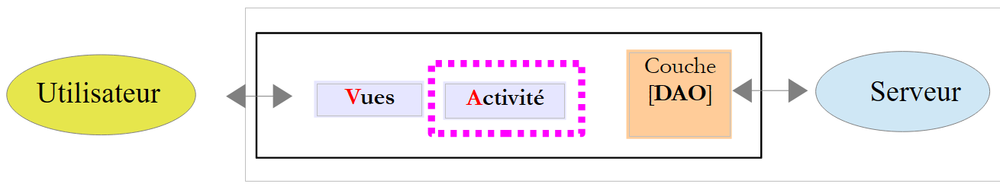 |
Die Tatsache, dass die Aktivität die Schnittstelle der [DAO]-Schicht implementiert, ermöglicht es den Ansichten, die [DAO]-Schicht nicht zu kennen: Ihre Ereignisbehandler kommunizieren mit der [Activity]-Schicht, wenn sie mit dem Server interagieren müssen.
- Zeile 24: ein Verweis auf die [DAO]-Schicht, die vom Konstruktor in Zeile 35 initialisiert wird;
- Zeile 26: eine Referenz auf die von den Fragmenten gemeinsam genutzte Sitzung, initialisiert durch den Konstruktor in Zeile 33;
- Zeilen 46–59: Implementierung der [IDao]-Schnittstelle;
Die Klasse [MainActivity] initialisiert die Komponenten ihrer zugehörigen Ansicht wie folgt:
// barre d'outils
private Toolbar toolbar;
// gestionnaire de fragments
private MyPager mViewPager;
// conteneur d'onglets
private TabLayout tabLayout;
// image d'attente
private ProgressBar loadingPanel;
...
@Override
public void onCreate(Bundle savedInstanceState) {
// classique
super.onCreate(savedInstanceState);
setContentView(R.layout.activity_main);
// session
session.setActivity(this);
// configuration timeouts de la couche [DAO]
setClientTimeouts(Constants.CONNECT_TIMEOUT, Constants.READ_TIMEOUT);
// composants
mViewPager = (MyPager) findViewById(R.id.container);
toolbar = (Toolbar) findViewById(R.id.toolbar);
loadingPanel = (ProgressBar) findViewById(R.id.loadingPanel);
tabLayout = (TabLayout) findViewById(R.id.tabs);
// toolbar
setSupportActionBar(toolbar);
// au départ on n'a qu'un seul onglet
TabLayout.Tab tab = tabLayout.newTab();
tab.setText("Request");
tabLayout.addTab(tab);
// gestionnaire d'évt
tabLayout.setOnTabSelectedListener(new TabLayout.OnTabSelectedListener() {
@Override
public void onTabSelected(TabLayout.Tab tab) {
// un onglet a été sélectionné - on change le fragment affiché par le conteneur de fragments
int position = tab.getPosition();
if (position == 0) {
// onglet requête
showView(0);
} else {
// onglet réponse - dépend de l'exemple choisi
showView(session.getExamplePosition());
}
}
@Override
public void onTabUnselected(TabLayout.Tab tab) {
}
@Override
public void onTabReselected(TabLayout.Tab tab) {
}
});
// création des fragments des réponses
createResponseFragments();
// gestion image d'attente
loadingPanel.setVisibility(View.INVISIBLE);
}
Dieser Code ist in einer Aktivität ziemlich standardmäßig. Lassen Sie uns einige Punkte erläutern:
- Zeile 19 verweist auf die folgende [Constants]-Klasse:
package android.aleas.activity;
abstract public class Constants {
final static public int VUE_REQUEST = 0;
final static public int VUE_RESPONSE = 1;
final static public int CONNECT_TIMEOUT = 1000;
final static public int READ_TIMEOUT = 6000;
final static public int DELAY_MAX = 5000;
final static public String EXAMPLES_PACKAGE = "android.aleas.exemples";
}
- Zeilen 31–33: Wir erstellen die erste Registerkarte mit dem Titel [Request]. Zu einem bestimmten Zeitpunkt haben wir Folgendes im Speicher:
- das [Request]-Fragment;
- n Fragmente vom Typ [ExampleXXFragment];
Die erste Registerkarte zeigt immer das Fragment [Request] an. Die zweite Registerkarte zeigt das Fragment [ExampleXXFragment] an, das dem vom Benutzer ausgewählten Beispiel entspricht. Das von der zweiten Registerkarte angezeigte Fragment ändert sich daher im Laufe der Zeit;
- Zeilen 37–48: Der Code, der ausgeführt wird, wenn der Benutzer auf eine der Registerkarten klickt;
- Zeile 43: Fragment Nr. 0 wird angezeigt;
- Zeile 46: Das aktuell verwendete (angezeigte) Fragment wird angezeigt. Seine Nummer wird aus der Sitzung abgerufen;
- Zeile 62: Erstellt die Fragmente für alle im Beispiel-Spinner der Ansicht [RequestFragment] (1. Registerkarte) vorhandenen Beispiele;
- Zeile 65: Das Lade-Bild ist derzeit ausgeblendet;
Um die Methode [showView] (Zeilen 43, 46) und die Methode [createResponseFragments] zu verstehen, müssen wir zunächst den In-Memory-Fragment-Manager vorstellen (Klasse in der Java-Datei MainActivity enthalten):
// fragment manager - must define getItem, getCount methods
public class SectionsPagerAdapter extends FragmentPagerAdapter {
// managed fragments
private MyFragment[] fragments;
// manufacturer
public SectionsPagerAdapter(FragmentManager fm, MyFragment[] fragments) {
super(fm);
this.fragments = fragments;
}
// must render fragment no. position
@Override
public MyFragment getItem(int position) {
// the fragment
return fragments[position];
}
// makes the number of fragments to manage
@Override
public int getCount() {
// no. of fragments
return fragments.length;
}
}
}
- Die Klasse [SectionsPagerAdapter] erweitert die Android-Klasse [FragmentPagerAdapter]. Sie überschreibt zwei Methoden ihrer übergeordneten Klasse:
- die Methode [getItem], Zeile 15;
- die Methode [getCount], Zeile 22;
- Die Klasse [SectionsPagerAdapter] enthält alle Fragmente der Anwendung. Diese sind in Zeile 5 gespeichert. Beachten Sie, dass sie vom Typ [MyFragment] sind, wie in Abschnitt 9.3.7.1 beschrieben;
- Zeile 8: Um sich selbst zu erstellen, erhält die Klasse [SectionsPagerAdapter] die Fragmente, die sie verwalten muss;
- Zeilen 14–18: Die Methode [getItem] gibt das Fragment an der Position [position] zurück;
- Zeilen 21–25: Die Methode [getCount] gibt die Gesamtzahl der Fragmente zurück;
Die Methode [createResponseFragments] erstellt alle von der Anwendung benötigten Fragmente:
private void createResponseFragments() {
// spinner examples
ArrayAdapter<CharSequence> adapter = ArrayAdapter.createFromResource(this, R.array.exemples, android.R.layout.simple_spinner_item);
// Specify the layout to use when the list of choices appears
adapter.setDropDownViewResource(android.R.layout.simple_spinner_dropdown_item);
// put the adapter in the session so that the [Request] view can retrieve it
session.setSpinnerExemplesAdapter(adapter);
...
}
- Zeile 3: Wir erstellen einen Adapter für den Spinner „examples“, in diesem Fall eine Liste von Strings, die die Namen der Beispiele darstellen. Diese Namen sind in der Datei [layout/exemples.xml] enthalten:
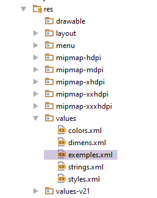 |
Die Datei [examples.xml] enthält den folgenden Code:
<!-- exemples -->
<resources>
<string-array name="exemples">
<item>Exemple-01</item>
<item>Exemple-02</item>
<item>Exemple-03</item>
<item>Exemple-04</item>
</string-array>
</resources>
Zeile 1: Diese Datei ist der zweite Parameter der Methode [createFromResource]. In [R.array.examples] ist [examples] der Name des Arrays (siehe Zeile 3 oben), nicht der Name der Datei.
- Zeile 5: Wir ordnen dem Adapter ein Layout (Display Manager) zu. Nun verfügt der Adapter sowohl über die Daten als auch über den Anzeigemodus;
- Zeile 7: Wir fügen den Adapter zur Sitzung hinzu. Hier wird er von dem [RequestFragment] abgerufen, das ihn benötigt;
Fahren wir mit dem Code für die Methode [createResponseFragments] fort:
private void createResponseFragments() {
// spinner examples
ArrayAdapter<CharSequence> adapter = ArrayAdapter.createFromResource(this, R.array.exemples, android.R.layout.simple_spinner_item);
// Specify the layout to use when the list of choices appears
adapter.setDropDownViewResource(android.R.layout.simple_spinner_dropdown_item);
// put the adapter in the session so that the [Request] view can retrieve it
session.setSpinnerExemplesAdapter(adapter);
// create fragment table (1 query, n responses)
MyFragment[] tFragments = new MyFragment[adapter.getCount() + 1];
// query fragment
tFragments[0] = new RequestFragment();
// answer fragments
for (int i = 1; i < tFragments.length; i++) {
// we construct the name of the fragment to be instantiated, corresponding to the example chosen by the user
// this name must be the full name with its package - here it is directly associated with the example number in the spinner
String exampleClassName = String.format("%s.Example%02dFragment", Constants.EXAMPLES_PACKAGE, i);
// instantiate the fragment associated with the example
MyFragment fragment;
try {
// class instantiation
fragment = (MyFragment) Class.forName(exampleClassName).getConstructors()[0].newInstance(new Object[]{});
} catch (Exception e) {
e.printStackTrace();
return;
}
// the fragment has been created - we put it in the table
tFragments[i] = fragment;
}
// instantiation of the fragment manager with these new fragments
mSectionsPagerAdapter = new SectionsPagerAdapter(getSupportFragmentManager(), tFragments);
// Set up the ViewPager with the sections adapter.
mViewPager.setAdapter(mSectionsPagerAdapter);
// page navigation - this instruction is important
// here we say that on both sides of the displayed view, we must keep [tFragments.length] views initialized
// this means that all fragments used by the application are in memory and initialized
// if you don't do this then the default [OffscreenPageLimit] is 1
// so if the fragment displayed is no. 3, only fragments 2 and 4 will be initialized
// this is done by calling the [onCreateView] method of these 2 fragments - this means that in this method, you must plan to
// regenerate the visual appearance of the fragment the last time it was used
// there's code that can't stand being run twice - it creates a huge mess and is complex to manage
// here we've chosen to avoid these difficulties - in the logs, we can see that when the application starts, all fragments are created
// and their method [onCreateView] executed - it's never executed again -
mViewPager.setOffscreenPageLimit(tFragments.length);
// inhibit swiping between fragments
mViewPager.setSwipeEnabled(false);
}
- Zeile 9: Erstellung des Arrays, das alle Fragmente der App enthalten wird;
- Zeile 11: Das erste Fragment ist das Abfragefragment;
- Zeilen 13–28: Wir erstellen so viele Fragmente, wie es Beispiele gibt. Diese Fragmente erben alle vom Antwortfragment [ResponseFragment] und implementieren nur das, was für das jeweilige Beispiel spezifisch ist: die Erzeugung der beobachteten Werte. Diese Werte unterscheiden sich von Beispiel zu Beispiel;
- Zeile 16: Ein Beispielfragment hat einen Standardnamen: ExampleXXFragment, wobei XX seine Position im Beispiel-Spinner plus 1 ist. XX ist auch die Fragmentnummer des Beispiels im Fragment-Manager;
- Zeile 21: Instanziierung des Fragments von Beispiel #i aus dem Spinner:
- Class.forName(exampleName): Lädt das Fragment in den Speicher;
- Class.forName(exampleName).getConstructors()[0]: Ruft eine Referenz auf den ersten Konstruktor der Klasse ab. Die Klasse ExampleXXFragment hat nur einen Konstruktor. Daher wird eine Referenz auf diesen Konstruktor abgerufen;
- Class.forName(exampleName).getConstructors()[0].newInstance(new Object[]{}) instanziiert ein Objekt vom Typ ExampleXXFragment unter Verwendung des Konstruktors aus dem vorherigen Schritt. new Object[]{} repräsentiert die an diesen Konstruktor übergebenen Parameter. Da der Konstruktor der Klasse ExampleXXFragment keine Parameter erwartet, wird ein leeres Objekt-Array übergeben;
- Zeile 27: Dieses Fragment wird dem Fragment-Array hinzugefügt;
- Zeile 30: Wir haben gesehen, dass der Konstruktor des Fragment-Managers [SectionsPagerAdapter] das Array der zu verwaltenden Fragmente als Parameter erwartete. Wir übergeben es nun an den Konstruktor;
- Zeile 22: Der Fragment-Container [mViewPager] der mit der Aktivität [MainActivity] verbundenen Ansicht wird hier mit dem Fragment-Manager verknüpft: Der Fragment-Container [mViewPager] zeigt die Fragmente aus dem Fragment-Manager an;
- Zeile 43: Lesen Sie die Kommentare – die Anweisung besagt im Wesentlichen, dass alle Fragmente in dem Zustand verbleiben müssen, in den sie der Code versetzt, unabhängig davon, welches Fragment gerade angezeigt wird. Wenn wir also zu ihm zurückkehren, finden wir es in dem Zustand vor, in dem wir es zurückgelassen haben;
- Zeile 45: Der Fragment-Container [mViewPager] ist vom Typ [MyPager], wodurch das Wischen deaktiviert wird;
Die Methode [MainActivity.showView] lautet wie folgt:
// display view n° [position]
private void showView(int position) {
// refresh the fragment before displaying it
mSectionsPagerAdapter.getItem(position).onRefresh();
// displays the requested view - goes directly to the view (second parameter set to false)
// without this parameter, the user defaults to the desired view, quickly displaying intermediate views - undesirable behavior
mViewPager.setCurrentItem(position, false);
}
- Zeile 3: Wir möchten das Fragment mit der Position #position anzeigen;
- Zeile 4: Dieses Fragment wird vom Fragment-Manager angefordert und anschließend aktualisiert. Seit der letzten Anzeige hat sich die Sitzung möglicherweise geändert. Das Fragment muss daher die Sitzung überprüfen, um festzustellen, ob eine Aktualisierung erforderlich ist;
- Zeile 7: Das Fragment wird vom [ViewPager] angezeigt. Da dieser mit dem Fragment-Manager verknüpft ist, wird Fragment #[position] angezeigt – dasjenige, das wir gerade in Zeile 4 aktualisiert haben;
Schließen wir mit den beiden Methoden zur Verwaltung der Wartezeit ab:
public void beginWaiting() {
// gestion image d'attente
loadingPanel.setVisibility(View.VISIBLE);
}
public void cancelWaiting() {
// gestion image d'attente
loadingPanel.setVisibility(View.INVISIBLE);
// fin exécution
session.setOnAir(false);
session.setOperationStarted(false);
}
9.3.7.5. Das [RequestFragment]-Fragment
Die Klasse [RequestFragment] sieht wie folgt aus:
package android.aleas.fragments;
import android.aleas.R;
import android.aleas.activity.Constants;
import android.aleas.activity.MainActivity;
import android.os.Bundle;
import android.util.Log;
import android.view.LayoutInflater;
import android.view.View;
import android.view.ViewGroup;
import android.widget.*;
import java.net.URI;
import java.net.URISyntaxException;
public class RequestFragment extends MyFragment {
// URL of the web service
private EditText edtUrlServiceRest;
private TextView txtMsgErreurUrlServiceWeb;
// number of requests
private EditText edtNbRequests;
private TextView txtErrorRequests;
// generation interval
private EditText edtA;
private EditText edtB;
private TextView txtErrorIntervalle;
// delay
private EditText edtMinDelay;
private EditText edtMaxDelay;
private TextView txtErrorDelay;
// number of values generated
private EditText edtMinCount;
private EditText edtMaxCount;
private TextView txtErrorCount;
// button
private Button btnExecuter;
// list of answers
private ListView listReponses;
private TextView infoReponses;
// spinner examples
private Spinner spinnerExemples;
// seizures
private int nbRequests;
private int a;
private int b;
private String urlServiceWebJson;
private int minDelay;
private int maxDelay;
private int minCount;
private int maxCount;
// manufacturer
public RequestFragment() {
super();
Log.d("rxjava", "RequestFragment constructor");
}
@Override
public View onCreateView(LayoutInflater inflater, ViewGroup container, Bundle savedInstanceState) {
Log.d("rxjava", "RequestFragment onCreateView");
// recover activity and session
activity = (MainActivity) getActivity();
session = activity.getSession();
// create the fragment view from its definition XML
View view = inflater.inflate(R.layout.request, container, false);
// components
edtUrlServiceRest = (EditText) view.findViewById(R.id.editTextUrlServiceWeb);
txtMsgErreurUrlServiceWeb = (TextView) view.findViewById(R.id.textViewErreurUrl);
edtNbRequests = (EditText) view.findViewById(R.id.edt_nbrequests);
txtErrorRequests = (TextView) view.findViewById(R.id.txt_error_nbrequests);
edtA = (EditText) view.findViewById(R.id.edt_a);
edtB = (EditText) view.findViewById(R.id.edt_b);
txtErrorIntervalle = (TextView) view.findViewById(R.id.txt_errorIntervalle);
edtMinDelay = (EditText) view.findViewById(R.id.edt_minDelay);
edtMaxDelay = (EditText) view.findViewById(R.id.edt_maxDelay);
txtErrorDelay = (TextView) view.findViewById(R.id.txt_error_delay);
edtMinCount = (EditText) view.findViewById(R.id.edt_minCount);
edtMaxCount = (EditText) view.findViewById(R.id.edt_maxCount);
txtErrorCount = (TextView) view.findViewById(R.id.txt_error_count);
btnExecuter = (Button) view.findViewById(R.id.btn_Executer);
listReponses = (ListView) view.findViewById(R.id.lst_reponses);
infoReponses = (TextView) view.findViewById(R.id.txt_Reponses);
spinnerExemples = (Spinner) view.findViewById(R.id.spinnerExemples);
// execute] button
btnExecuter.setVisibility(View.VISIBLE);
btnExecuter.setOnClickListener(new View.OnClickListener() {
public void onClick(View arg0) {
doExecuter();
}
});
// initially no error messages
txtErrorRequests.setVisibility(View.INVISIBLE);
txtErrorIntervalle.setVisibility(View.INVISIBLE);
txtMsgErreurUrlServiceWeb.setVisibility(View.INVISIBLE);
txtErrorCount.setVisibility(View.INVISIBLE);
txtErrorDelay.setVisibility(View.INVISIBLE);
// spinner examples
spinnerExemples.setAdapter(session.getSpinnerExemplesAdapter());
// result
return view;
}
...
}
- Zeile 16: Die Klasse [RequestFragment] erweitert die Klasse [MyFragment] (siehe Abschnitt 9.3.7.1);
- Zeilen 18–42: die visuellen Komponenten des Fragments (siehe Abschnitt 9.3.7.2);
- Zeilen 45–52: Benutzereingaben im Formular;
- Der Konstruktor (Zeilen 55–58) und die Methode [onCreateView] werden ausgeführt, wenn die Aktivität [MainActivity] alle Fragmente in der Anwendung erstellt. Dies geschieht nur einmal;
- Zeile 61: Der Code für die Methode [onCreateView] entspricht dem Standard. Beachten Sie in Zeile 102, dass der Spinner-Adapter aus den Beispielen aus der Sitzung abgerufen wird. Beachten Sie außerdem in Zeile 91, dass das Klicken auf die Schaltfläche [Execute] von der Methode [doExecute] verarbeitet wird;
- Zeilen 64–65: Die Felder [activity] und [session] gehören zur übergeordneten Klasse [MyFragment];
Die Methode [doExecute] lautet wie folgt:
// seizures
private int nbRequests;
private int a;
private int b;
private String urlServiceWebJson;
private int minDelay;
private int maxDelay;
private int minCount;
private int maxCount;
...
private void doExecuter() {
// valid entries?
if (isPageValid()) {
// we put info in session
session.setInfos(nbRequests, a, b, minCount, maxCount, minDelay, maxDelay, urlServiceWebJson, spinnerExemples.getSelectedItem().toString(), spinnerExemples.getSelectedItemPosition() + 1);
// store the URL of the web service
activity.setUrlServiceWebJson(session.getUrlWebJson());
Log.d("rxjava", String.format("RequestFragment doExecuter, session=%s, session.position=%s%n", session, session.getExamplePosition()));
// action in progress
session.setOnAir(true);
// but not started
session.setOperationStarted(false);
// the answer fragment is displayed
activity.selectTab(Constants.VUE_RESPONSE);
// we start waiting
beginWaiting();
}
}
- Zeile 15: Wir gehen nicht näher auf die Methode [ispageValid] ein. Sie prüft die Gültigkeit der Einträge und gibt nur dann „true“ zurück, wenn alle gültig sind. In diesem Fall werden sie zur Initialisierung der Felder in den Zeilen 2–9 verwendet;
- Zeile 17: Die verschiedenen Einträge werden in der Sitzung gespeichert:
- [spinnerExemples.getSelectedItem().toString()] ist der Name des vom Benutzer ausgewählten Beispiels und wird in [session.exampleName] gespeichert;
- [spinnerExemples.getSelectedItemPosition() + 1] ist die mit dem Beispiel verknüpfte Fragment-ID, die vom Fragment-Manager gespeichert wurde. Diese ID wird in [session.examplePosition] gespeichert;
- Zeile 19: Die URL des Webdienstes / JSON wird an die Aktivität übergeben, die sie wiederum an die [DAO]-Schicht weiterleitet;
- Zeilen 21–24: Beachten Sie, dass ein Vorgang im Begriff ist zu starten;
- Zeile 26: Die Registerkarte „Response“ wird angezeigt. Um zu verstehen, was passieren wird, erinnern Sie sich an den Code [MainActivity.selectTab]:
// sélection d'un onglet
public void selectTab(int position) {
// il y a au plus 2 onglets
// au départ il n'y en a qu'un, celui de la requête
// si l'onglet demandé est le n° 1 et que celui-ci n'existe pas encore, alors il faut le créer
if (position == 1 && tabLayout.getTabCount() == 1) {
// 1 onglet de +
TabLayout.Tab tab = tabLayout.newTab();
tab.setText("Response");
tabLayout.addTab(tab);
}
// on sélectionne par programme l'onglet, ce qui va déclencher l'événement [onTabSelected]
// qui va associer la bonne vue à cet onglet
tabLayout.getTabAt(position).select();
}
- Anfangs hatte die Aktivität nur die Registerkarte „Request“ (Registerkarte Nr. 0) erstellt;
- Zeilen 6–11: Erstellen Sie die Antwort-Registerkarte (Registerkarte Nr. 1), falls diese noch nicht erstellt wurde;
- Zeile 14: Wir wählen die Position der Registerkarte (0 oder 1). Dadurch wird das Ereignis [onTabSelected] in die Warteschlange der Ereignisschleife der Android-App gestellt;
Der Handler für das [onTabSelected]-Ereignis in [MainActivity] lautet wie folgt:
@Override
public void onTabSelected(TabLayout.Tab tab) {
// un onglet a été sélectionné - on change le fragment affiché par le conteneur de fragments
int position = tab.getPosition();
if (position == 0) {
// onglet requête
showView(0);
} else {
// onglet réponse - dépend de l'exemple choisi
showView(session.getExamplePosition());
}
}
Im Fall der Registerkarte [Response] wird Zeile 9 ausgeführt. Das Fragment mit der ID [session.getExamplePosition()] wird angezeigt. Bei [example-03] beispielsweise ist die in [session.examplePosition] gespeicherte ID 3. Zeile 10 zeigt dann das Fragment mit der ID 3 an. Das ursprünglich von der Aktivität erstellte Fragment-Array lautet [RequestFragment, Example01Fragment, Example02Fragment, Example03Fragment,..]. Daher wird tatsächlich das [Example03Fragment] angezeigt. Dies geschieht durch den folgenden Code:
// display view n° [position]
private void showView(int position) {
// refresh the fragment before displaying it
mSectionsPagerAdapter.getItem(position).onRefresh();
// displays the requested view - goes directly to the view (second parameter set to false)
// without this parameter, the user defaults to the desired view, quickly displaying intermediate views - undesirable behavior
mViewPager.setCurrentItem(position, false);
}
Wir sehen, dass das Fragment vor der Anzeige (Zeile 7) aktualisiert wird (Zeile 4).
9.3.7.6. Das [ResponseFragment]-Fragment
Die Klasse [ResponseFragment] zeigt Antworten vom Server an. Ihr Code lautet wie folgt:
package android.aleas.fragments;
import android.aleas.R;
import android.aleas.activity.MainActivity;
import android.os.Bundle;
import android.util.Log;
import android.view.LayoutInflater;
import android.view.View;
import android.view.ViewGroup;
import android.widget.ArrayAdapter;
import android.widget.Button;
import android.widget.ListView;
import android.widget.TextView;
import org.codehaus.jackson.map.ObjectMapper;
import rx.Subscription;
import java.io.IOException;
import java.util.ArrayList;
import java.util.List;
public abstract class ResponseFragment extends MyFragment {
// list of answers
private ListView listReponses;
private TextView infoReponses;
// button
private Button btnAnnuler;
// mapper jSON
private ObjectMapper mapper;
protected ResponseFragment() {
super();
Log.d("rxjava", String.format("ResponseFragment (%s) constructor", this));
mapper = new ObjectMapper();
}
@Override
public View onCreateView(LayoutInflater inflater, ViewGroup container, Bundle savedInstanceState) {
// recover activity and session
activity = (MainActivity) getActivity();
session = activity.getSession();
Log.d("rxjava", String.format("ResponseFragment (%s) onCreateView%n", this));
// create the fragment view from its definition XML
View view = inflater.inflate(R.layout.response, container, false);
// components
listReponses = (ListView) view.findViewById(R.id.lst_reponses);
infoReponses = (TextView) view.findViewById(R.id.txt_Reponses);
btnAnnuler = (Button) view.findViewById(R.id.btn_Annuler);
// cancel] button
btnAnnuler.setVisibility(View.INVISIBLE);
btnAnnuler.setOnClickListener(new View.OnClickListener() {
public void onClick(View arg0) {
doAnnuler();
}
});
// result
return view;
}
...
// method to be executed (by explicit code) before each fragment display
public void onRefresh() {
...
}
}
- Zeile 21: Die Klasse [ResponseFragment] erweitert die Klasse [MyFragment];
- Zeilen 23–27: die Komponenten des Fragments;
- Zeilen 32–36: Der Konstruktor wird nur einmal ausgeführt, und zwar bei der anfänglichen Erstellung der Beispielfragmente durch die Aktivität. Dies liegt daran, dass alle Beispielfragmente das [ResponseFragment]-Fragment erweitern. Bei ihrer Instanziierung wird der Konstruktor ihrer übergeordneten Klasse [ResponseFragment] aufgerufen;
- Zeile 35: Initialisiert den JSON-Mapper aus Zeile 30, der zur Anzeige der JSON-Zeichenkette eines Ausnahmestapels verwendet wird;
- Zeilen 38–59: Die Methode [onCreateView] wird nur einmal ausgeführt, und zwar bei der anfänglichen Erstellung der Beispielfragmente durch die Aktivität. Sie enthält Standardcode, wie er in einer Android-Anwendung zu finden ist;
- Zeilen 52–56: Die Methode, die beim Klicken auf die Schaltfläche [Cancel] ausgeführt wird, ist die Methode [doCancel];
- Zeilen 62–64: Die Methode [onRefresh] wird jedes Mal ausgeführt, wenn die Registerkarte [Response] angezeigt wird;
Dank der verschiedenen Logs, die in wichtigen Methoden platziert wurden, können wir sehen, was beim Start der App passiert:
- Zeile 1: Erstellung des Fragments [RequestFragment];
- Zeilen 2–9: Erstellung der Fragmente für die 4 Beispiele in der Anwendung;
- Zeile 10: Initialisierung des Fragments [RequestFragment];
- Zeilen 11–14: Initialisierung der Fragmente für die 4 Beispiele in der Anwendung;
Danach tauchen Aufrufe dieser Methoden nicht mehr auf.
Die Methode [ResponseFragment.onRefresh] sieht wie folgt aus:
// méthode à exécuter (par code explicite) avant chaque visualisation du fragment
public void onRefresh() {
Log.d("rxjava", String.format("ResponseFragment (%s) onRefresh for %s, sessionIsOnAir=%s session.isOperationStarted=%s%n", this, activity == null ? null : activity.getSession().getExampleName(), session.isOnAir(), session.isOperationStarted()));
// exécution en cours ?
if (session.isOnAir() && !session.isOperationStarted()) {
// exécution requête
session.setOperationStarted(true);
doExecuter();
}
}
- Zeile 5: Wir prüfen, ob das [RequestFragment] eine Anfrage gestellt hat (session.isOnAir) und ob es gestartet wurde (isOperationStarted). Wenn das [RequestFragment] eine Anfrage gestellt hat und noch nicht läuft, wird der Vorgang gestartet (Zeilen 7–8);
- Sobald der Vorgang gestartet ist, kann der Benutzer, da dieser asynchron abläuft, zwischen den beiden Registerkarten wechseln. Wenn der Benutzer zurück zur Registerkarte [Response] wechselt und ein Vorgang läuft, werden die Zeilen 7–8 nicht ausgeführt;
Die Methode [doExecute] in Zeile 8 führt den vom Benutzer angeforderten Vorgang aus:
private void doExecuter() {
Log.d("rxjava", String.format("ResponseFragment (%s) doExecuter for %s%n", this, session.getExampleName()));
// start waiting
beginWaiting();
// preparation execution
subscriptions.clear();
reponses.clear();
nbInfos = 0;
// create and execute observables for the chosen example
createAndExecuteObservables();
}
// method implemented by child classes
protected abstract void createAndExecuteObservables();
- Zeile 10: Erstellt, führt aus und beobachtet Observables. Diese sind für jedes Beispiel unterschiedlich. Deshalb ist die Methode [createAndExecuteObservables] abstrakt (Zeile 14). Sie wird von den Fragmenten [ExampleXXFragment] implementiert, die die Klasse [ResponseFragment] erweitern;
- Zeile 6: Die Liste der Abonnements wird gelöscht;
- Zeile 7: Die Liste, die die Antworten anzeigt, wird gelöscht;
- Zeile 8: Zählt die Anzahl der empfangenen Antworten;
Die Unterklassen [ExampleXXFragment] übertragen der folgenden Methode [showAlea] die Aufgabe, die von ihnen beobachteten Elemente anzuzeigen:
protected void showAlea(String data) {
// one more piece of information
nbInfos++;
infoReponses.setText(String.format("Liste des réponses (%s)", nbInfos));
// 1 more answer
reponses.add(0, data);
Log.d("rxjava", data);
// maj of UI
listReponses.setAdapter(new ArrayAdapter<String>(getActivity(), android.R.layout.simple_list_item_1, android.R.id.text1, reponses));
}
- Zeile 1: Wir sehen, dass das beobachtete Element als String eintrifft. Dabei handelt es sich tatsächlich um den JSON-String des beobachteten Elements. Dies ermöglicht es uns, eine einzige Methode zur Anzeige des beobachteten Elements zu verwenden, unabhängig von dessen genauem Java-Typ;
- Zeile 6: Das beobachtete [Daten]-Element wird an die erste Position der Liste der Antworten angefügt. Der Benutzer sieht somit die neuesten Antworten ganz oben in der Liste;
Das Warten wird durch die folgenden Methoden [beginWaiting] und [cancelWaiting] verwaltet:
private void beginWaiting() {
// we set the hourglass
activity.beginWaiting();
// the [Cancel] button is displayed
btnAnnuler.setVisibility(View.VISIBLE);
}
protected void cancelWaiting() {
// end of wait
activity.cancelWaiting();
// the [Cancel] button is hidden
btnAnnuler.setVisibility(View.INVISIBLE);
}
Sie rufen die gleichnamigen Methoden in der Aktivität auf und blenden die Schaltfläche [Abbrechen] einfach ein oder aus.
Das Klicken auf die Schaltfläche [Abbrechen] wird durch den folgenden Code verarbeitet:
protected void doAnnuler() {
// on annule tous les abonnements
for (Subscription s : subscriptions) {
if (!s.isUnsubscribed()) {
s.unsubscribe();
}
}
// fin de l'attente
cancelWaiting();
}
- Zeilen 3–7: Alle Abonnements nacheinander kündigen;
9.3.8. Beispiele für Observables
9.3.8.1. Beispiel-01
Die [ExampleXXFragment]-Klassen dienen dazu, Observables zu erstellen, auszuführen und zu beobachten. Die beobachteten Werte werden von der übergeordneten Klasse [ResponseFragment] angezeigt.
Die Klasse [Example01Fragment] sieht wie folgt aus:
 |
package android.aleas.exemples;
import android.aleas.dao.AleasDaoResponse;
import android.aleas.fragments.AleasUiResponse;
import android.aleas.fragments.Request;
import android.aleas.fragments.ResponseFragment;
import android.util.Log;
import org.codehaus.jackson.map.ObjectMapper;
import org.codehaus.jackson.map.ser.impl.SimpleBeanPropertyFilter;
import org.codehaus.jackson.map.ser.impl.SimpleFilterProvider;
import rx.Observable;
import rx.android.schedulers.AndroidSchedulers;
import rx.functions.Action0;
import rx.functions.Action1;
import rx.schedulers.Schedulers;
import java.io.IOException;
public class Example01Fragment extends ResponseFragment {
// mappers jSON
private ObjectMapper mapperAleasUiResponse;
// manufacturer
public Example01Fragment() {
super();
Log.d("rxjava", "Example01Fragment constructor");
// filters jSON
mapperAleasUiResponse = new ObjectMapper();
}
@Override
public void createAndExecuteObservables() {
Log.d("rxjava", "Example01Fragment createAndExecuteObservables");
// we ask for the random numbers
Observable<AleasDaoResponse> observable = Observable.empty();
for (int i = 0; i < session.getNbRequests(); i++) {
// observable configuration n° i
// request to server
Request request = session.getRequest();
request.setId(i);
// observable executed on computation thread
observable = observable.mergeWith(session.getActivity().getAleas(request).subscribeOn(Schedulers.io()));
}
// observation on event loop thread;
observable = observable.observeOn(AndroidSchedulers.mainThread());
// we execute all these observables
subscriptions.add(observable.subscribe(new Action1<AleasDaoResponse>() {
@Override
public void call(AleasDaoResponse aleasDaoResponse) {
showAlea(getDataFrom(aleasDaoResponse));
}
}, new Action1<Throwable>() {
...
}, new Action0() {
...
}
private String getDataFrom(AleasDaoResponse aleasDaoResponse) {
// extract the information to be displayed
String data;
try {
data = mapperAleasUiResponse.writeValueAsString(new AleasUiResponse(aleasDaoResponse));
} catch (IOException e) {
data = String.format("[%s,%s]", e.getClass().getName(), e.getMessage());
}
return data;
}
}
- Zeile 36: die einzelne Observable, die generiert wird;
- Zeilen 37–44: Generierung und Konfiguration der verschiedenen Observables, die (in Zeile 43) in das Observable in Zeile 36 zusammengeführt werden;
- Zeile 43: Die Observable wird in einem Thread des Schedulers [Schedulers.io()] ausgeführt. Die HTTP-Anfrage an den Server wird in diesem Thread ausgeführt;
- Zeile 46: Das endgültige Observable wird im Event-Loop-Thread beobachtet;
- Zeilen 48–57: Ausführung von Observables, d. h. Anfragen an den Zufallszahlenserver. Android unterstützt Java 8 und dessen Lambdas noch nicht. Daher werden hier anonyme Klassen verwendet, um die funktionalen Schnittstellen von RxJava zu instanziieren;
- Zeilen 49–52: Aktion, die ausgeführt wird, wenn der Beobachter ein neues Element vom Typ [AleasDaoResponse] vom Observable erhält (siehe Abschnitt 9.3.6.1);
- Zeile 51: Aufruf der Methode [showAlea] der übergeordneten Klasse. Zur Erinnerung: Diese erwartet eine Zeichenkette. Diese wird von der Methode [getDataFrom] in den Zeilen 59–68 bereitgestellt;
- Zeile 63: Wir geben die JSON-Zeichenkette vom Typ [AleasUiResponse] wie folgt zurück:
package android.aleas.fragments;
import android.aleas.dao.AleasDaoResponse;
import java.text.SimpleDateFormat;
import java.util.Calendar;
public class AleasUiResponse {
// answer [DAO]
private AleasDaoResponse aleasDaoResponse;
// observation thread
private String observedOn;
// observation time
private String observedAt;
// manufacturers
public AleasUiResponse() {
observedOn = Thread.currentThread().getName();
observedAt = new SimpleDateFormat("hh:mm:ss:SSS").format(Calendar.getInstance().getTime());
}
public AleasUiResponse(AleasDaoResponse aleasDaoResponse, String on, String at) {
this.aleasDaoResponse = aleasDaoResponse;
this.observedOn = on;
this.observedAt = at;
}
public AleasUiResponse(AleasDaoResponse aleasDaoResponse) {
this();
this.aleasDaoResponse = aleasDaoResponse;
}
// getters and setters
...
}
- Zur Antwort der [DAO]-Schicht (Zeile 11) fügen wir zwei Informationen hinzu:
- Zeile 13: den Beobachtungs-Thread;
- Zeile 15: die Beobachtungszeit;
Kehren wir zum Abonnement-Code zurück:
@Override
public void createAndExecuteObservables() {
...
// we execute all these observables
subscriptions.add(observable.subscribe(new Action1<AleasDaoResponse>() {
@Override
public void call(AleasDaoResponse aleasDaoResponse) {
showAlea(getDataFrom(aleasDaoResponse));
}
}, new Action1<Throwable>() {
@Override
public void call(Throwable th) {
// exception is displayed
showAlea(getMessagesFromThrowable(th));
// after receiving an exception, the observable receives neither onNext nor onCompleted
// forced to cancel the subscription by hand
doAnnuler();
}
}, new Action0() {
@Override
public void call() {
// end waiting
cancelWaiting();
}
}));
}
- Zeilen 11–18: Fall, in dem der Beobachter eine Ausnahme erhält;
- Zeile 14: Wir verwenden erneut die Methode [showAlea] der übergeordneten Klasse, um die Ausnahme anzuzeigen. Die Methode [getMessagesFromThrowable] ist eine Methode der übergeordneten Klasse [ResponseFragment], die aus einer Ausnahme eine Zeichenkette generiert:
// messages d'une exception
protected String getMessagesFromThrowable(Throwable ex) {
// on crée une liste avec les msg d'erreur de la pile d'exceptions
List<String> messages = new ArrayList<String>();
Throwable th = ex;
while (th != null) {
messages.add(String.format("[%s, %s]", th.getClass().getName(), th.getMessage()));
th = th.getCause();
}
try {
return mapper.writeValueAsString(messages);
} catch (IOException e) {
return e.getMessage();
}
}
- Zeile 11: gibt die JSON-Zeichenkette einer Liste von Fehlermeldungen zurück (Zeile 4);
Kehren wir zum Code für das Observable-Abonnement zurück:
- Zeilen 19–25: Der Code, der ausgeführt wird, wenn der Beobachter die Benachrichtigung über das Ende der Emission erhält. Anschließend brechen wir die Wartezeit ab (Zeile 23), wodurch die Benutzeroberfläche aktualisiert wird;
Die Ausführung von Beispiel 01 erzeugt eine Ausgabe, die in etwa wie folgt aussieht:
Jedes Element in der Liste ist die JSON-Zeichenkette eines beobachteten Werts. Die Felder der JSON-Zeichenkette lauten wie folgt:
- aleas: die vom Server bereitgestellte Liste von Zufallszahlen;
- idClient: die Anforderungsnummer (man sieht, dass die Antworten in ungeordneter Reihenfolge eingegangen sind);
- on: der Ausführungsthread des Observables, das diesen Wert ausgegeben hat;
- requestAt: Zeitpunkt der Client-Anfrage;
- responseAt: Zeitpunkt der Serverantwort;
- delay: vom Server festgestellte Verzögerung;
- error: vom Server zurückgegebener Fehlercode (0 = kein Fehler);
- message: vom Server zurückgegebene Fehlermeldung (null = kein Fehler);
- observedAt: Zeitpunkt, zu dem der beobachtete Wert erfasst wurde;
- beobachtetVon: Thread, der den beobachteten Wert beobachtet;
9.3.8.2. Beispiel-02
Die Klasse [Example02Fragment] sieht wie folgt aus:
package android.aleas.exemples;
import android.aleas.dao.AleasDaoResponse;
import android.aleas.fragments.AleasUiResponse;
import android.aleas.fragments.Request;
import android.aleas.fragments.ResponseFragment;
import android.util.Log;
import org.codehaus.jackson.map.ObjectMapper;
import rx.Observable;
import rx.android.schedulers.AndroidSchedulers;
import rx.functions.Action0;
import rx.functions.Action1;
import rx.functions.Func1;
import rx.schedulers.Schedulers;
import java.io.IOException;
public class Example02Fragment extends ResponseFragment {
// mappers jSON
private ObjectMapper mapperAleasUiResponse;
// manufacturer
public Example02Fragment() {
super();
Log.d("rxjava", "Example02Fragment constructor");
// filter jSON
mapperAleasUiResponse = new ObjectMapper();
}
public void createAndExecuteObservables() {
Log.d("rxjava", "Example02Fragment createAndExecuteObservables");
// we ask for the random numbers
Observable<AleasDaoResponse> observable = Observable.empty();
for (int i = 0; i < session.getNbRequests(); i++) {
// request preparation
Request request = session.getRequest();
request.setId(i);
// only observables with an even customer number are kept
observable = observable
.mergeWith(session.getActivity().getAleas(request).filter(new Func1<AleasDaoResponse, Boolean>() {
@Override
public Boolean call(AleasDaoResponse aleasDaoResponse) {
return aleasDaoResponse.getClientState().getIdClient() % 2 == 0;
}
})
// execution on I/O thread
.subscribeOn(Schedulers.io()));
}
// observation on event loop thread
observable = observable.observeOn(AndroidSchedulers.mainThread());
// these observables are executed
subscriptions.add(observable.subscribe(new Action1<AleasDaoResponse>() {
@Override
public void call(AleasDaoResponse aleasDaoResponse) {
showAlea(getDataFrom(aleasDaoResponse));
}
}, new Action1<Throwable>() {
@Override
public void call(Throwable th) {
showAlea(getMessagesFromThrowable(th));
doAnnuler();
}
}, new Action0() {
@Override
public void call() {
// end waiting
cancelWaiting();
}
}));
}
private String getDataFrom(AleasDaoResponse aleasDaoResponse) {
// extract the information to be displayed
String data;
try {
data = mapperAleasUiResponse.writeValueAsString(new AleasUiResponse(aleasDaoResponse));
} catch (IOException e) {
data = String.format("[%s,%s]", e.getClass().getName(), e.getMessage());
}
return data;
}
}
Dieses Beispiel ähnelt dem vorherigen (Zeile 38). Aus den im vorherigen Beispiel erhaltenen Beobachtungswerten behalten wir jedoch nur diejenigen mit einer geraden Kundennummer (Zeilen 42–46) bei, wobei wir die [filter]-Methode (Zeile 41) verwenden.
Die erhaltenen Ergebnisse lauten wie folgt (für 10 Anfragen):
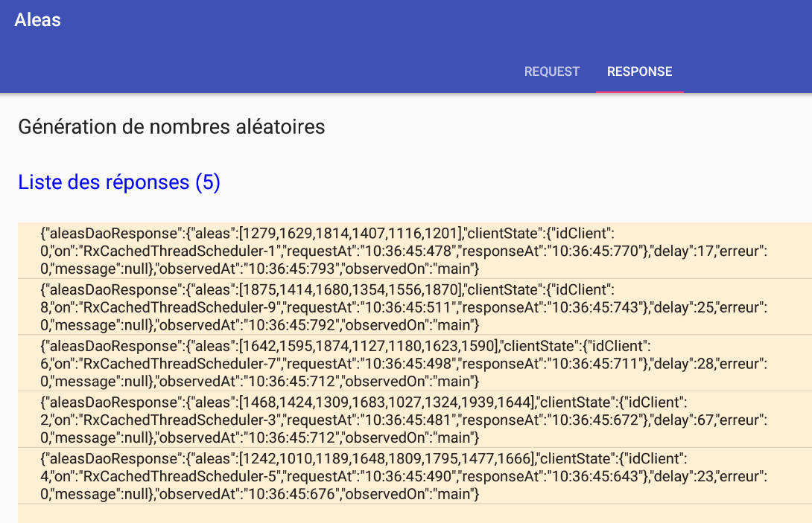
9.3.8.3. Beispiel-03
Die Klasse [Example03Fragment] sieht wie folgt aus:
package android.aleas.exemples;
import android.aleas.dao.AleasDaoResponse;
import android.aleas.fragments.Request;
import android.aleas.fragments.ResponseFragment;
import android.util.Log;
import org.codehaus.jackson.map.ObjectMapper;
import rx.Observable;
import rx.android.schedulers.AndroidSchedulers;
import rx.functions.Action0;
import rx.functions.Action1;
import rx.functions.Func1;
import rx.schedulers.Schedulers;
import java.io.IOException;
import java.util.List;
public class Example03Fragment extends ResponseFragment {
// mappers jSON
private ObjectMapper mapper;
// manufacturer
public Example03Fragment() {
super();
Log.d("rxjava", "Example03Fragment constructor");
// filter jSON
mapper = new ObjectMapper();
}
public void createAndExecuteObservables() {
Log.d("rxjava", "Example03Fragment createAndExecuteObservables");
// we ask for the random numbers
Observable<List<Integer>> observable = Observable.empty();
for (int i = 0; i < session.getNbRequests(); i++) {
// request preparation
Request request = session.getRequest();
request.setId(i);
// observable configuration
observable = observable.mergeWith(session.getActivity().getAleas(request).filter(new Func1<AleasDaoResponse, Boolean>() {
@Override
public Boolean call(AleasDaoResponse aleasDaoResponse) {
return aleasDaoResponse.getClientState().getIdClient() % 2 == 0;
}
}).map(new Func1<AleasDaoResponse, List<Integer>>() {
@Override
public List<Integer> call(AleasDaoResponse aleasDaoResponse) {
return aleasDaoResponse.getAleas();
}
})
// execution on I/O thread
.subscribeOn(Schedulers.io()));
}
// observation on event loop thread
observable = observable.observeOn(AndroidSchedulers.mainThread());
// these observables are executed
subscriptions.add(observable
.subscribe(new Action1<List<Integer>>() {
@Override
public void call(List<Integer> aleas) {
showAlea(getDataFrom(aleas));
}
},
new Action1<Throwable>() {
@Override
public void call(Throwable th) {
showAlea(getMessagesFromThrowable(th));
doAnnuler();
}
},
new Action0() {
@Override
public void call() {
// end waiting
cancelWaiting();
}
}
));
}
private String getDataFrom(List<Integer> aleas) {
// extract the information to be displayed
String data;
try {
data = mapper.writeValueAsString(aleas);
} catch (IOException e) {
data = String.format("[%s,%s]", e.getClass().getName(), e.getMessage());
}
return data;
}
}
Dieses Beispiel ähnelt Beispiel-02:
- Zeile 40: Wir definieren dieselben Observables wie in Beispiel-02;
- Zeile 45: Jeder von den vorherigen Observables ausgegebene Wert wird mithilfe der [map]-Methode in einen Typ List<Integer> umgewandelt, der die Liste der vom Server generierten Zufallszahlen darstellt;
- Zeile 58: Der beobachtete Wert ist nun vom Typ List<Integer>;
Das für 10 Anfragen erzielte Ergebnis lautet wie folgt:
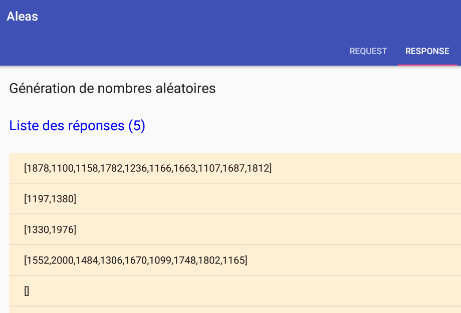
9.3.8.4. Beispiel-04
Die Klasse [Example04Fragment] sieht wie folgt aus:
package android.aleas.exemples;
import android.aleas.dao.AleasDaoResponse;
import android.aleas.fragments.Request;
import android.aleas.fragments.ResponseFragment;
import android.util.Log;
import org.codehaus.jackson.map.ObjectMapper;
import rx.Observable;
import rx.android.schedulers.AndroidSchedulers;
import rx.functions.Action0;
import rx.functions.Action1;
import rx.functions.Func1;
import rx.schedulers.Schedulers;
public class Example04Fragment extends ResponseFragment {
// mappers jSON
private ObjectMapper mapper;
// manufacturer
public Example04Fragment() {
super();
Log.d("rxjava", "Example04Fragment constructor");
// filter jSON
mapper = new ObjectMapper();
}
public void createAndExecuteObservables() {
Log.d("rxjava", "Example03Fragment createAndExecuteObservables");
// we ask for the random numbers
Observable<Integer> observable = Observable.empty();
for (int i = 0; i < session.getNbRequests(); i++) {
// request preparation
Request request = session.getRequest();
request.setId(i);
// observable configuration
observable = observable.mergeWith(session.getActivity().getAleas(request).filter(new Func1<AleasDaoResponse, Boolean>() {
@Override
public Boolean call(AleasDaoResponse aleasDaoResponse) {
return aleasDaoResponse.getClientState().getIdClient() % 2 == 0;
}
}).flatMap(new Func1<AleasDaoResponse, Observable<Integer>>() {
@Override
public Observable<Integer> call(AleasDaoResponse aleasDaoResponse) {
return Observable.from(aleasDaoResponse.getAleas());
}
})
// execution on an I/O thread
.subscribeOn(Schedulers.io()));
}
// observation on event loop thread
observable = observable.observeOn(AndroidSchedulers.mainThread());
// these observables are executed
subscriptions.add(observable
.subscribe(new Action1<Integer>() {
@Override
public void call(Integer alea) {
showAlea(String.valueOf(alea));
}
},
new Action1<Throwable>() {
@Override
public void call(Throwable th) {
showAlea(getMessagesFromThrowable(th));
doAnnuler();
}
},
new Action0() {
@Override
public void call() {
// end waiting
cancelWaiting();
}
}
));
}
}
Dieses Beispiel ähnelt Beispiel-03, mit dem Unterschied, dass wir anstelle der Methode [map] in Zeile 42 die Methode [flatMap] verwenden.
- Zeile 55: Beachten Sie, dass der Typ des beobachteten Werts nun Integer ist;
Für 10 Anfragen erhalten wir die folgenden Ergebnisse:

Diesmal gibt es mehr beobachtete Werte als Anfragen.
9.3.8.5. Beispiel-05
Wir werden nun die Vorgehensweise zum Hinzufügen eines neuen Beispiels für Beobachtungsgrößen zur Anwendung skizzieren.
Angenommen, wir möchten das Beispiel [Beispiel 22h] aus Abschnitt 7.6.4 nachstellen:
package dvp.rxjava.observables.exemples;
import dvp.rxjava.observables.utils.Process;
import dvp.rxjava.observables.utils.ProcessUtils;
import rx.Observable;
import rx.observables.GroupedObservable;
public class Exemple22h {
public static void main(String[] args) throws InterruptedException {
// process
Observable<GroupedObservable<Boolean, Integer>> obs = Observable.range(1, 10).groupBy(i -> i % 2 == 0);
Process<Integer> process = new Process<>("process", obs.concatMap(g -> g.asObservable()));
// subscriptions
ProcessUtils.subscribe(1, process);
}
}
- Die Werte des Observables [Observable.range(1, 10)] werden zunächst durch die Methode [groupBy] (Zeile 11) in gerade und ungerade Werte gruppiert und anschließend durch die Methode [concatMap] (Zeile 12) zu einem einzigen Observable zusammengefasst;
Schritt 1
Wir erstellen ein neues Beispiel in der Datei [examples.xml]:
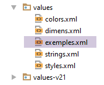 |
<!-- exemples -->
<resources>
<string-array name="exemples">
<item>Exemple-01</item>
<item>Exemple-02</item>
<item>Exemple-03</item>
<item>Exemple-04</item>
<item>Exemple-05</item>
</string-array>
</resources>
Oben wurde Zeile 8 hinzugefügt. Der Name des Beispiels kann beliebig gewählt werden.
Schritt 2
Duplizieren Sie die Klasse [Example04Fragment] als [Example05Fragment]. Hier ist der Name festgelegt.
Schritt 3
Ändern Sie den Code in [Example05Fragment] wie folgt:
package android.aleas.exemples;
import android.aleas.dao.AleasDaoResponse;
import android.aleas.fragments.Request;
import android.aleas.fragments.ResponseFragment;
import android.util.Log;
import org.codehaus.jackson.map.ObjectMapper;
import rx.Observable;
import rx.android.schedulers.AndroidSchedulers;
import rx.functions.Action0;
import rx.functions.Action1;
import rx.functions.Func1;
import rx.observables.GroupedObservable;
import rx.schedulers.Schedulers;
public class Example05Fragment extends ResponseFragment {
// mappers jSON
private ObjectMapper mapper;
// manufacturer
public Example05Fragment() {
super();
Log.d("rxjava", "Example05Fragment constructor");
// filter jSON
mapper = new ObjectMapper();
}
public void createAndExecuteObservables() {
Log.d("rxjava", "Example05Fragment createAndExecuteObservables");
// instantiations of functional interfaces
// filter
Func1<AleasDaoResponse, Boolean> filter = new Func1<AleasDaoResponse, Boolean>() {
@Override
public Boolean call(AleasDaoResponse aleasDaoResponse) {
return aleasDaoResponse.getClientState().getIdClient() % 2 == 0;
}
};
// flatMap
Func1<AleasDaoResponse, Observable<Integer>> flatMap = new Func1<AleasDaoResponse, Observable<Integer>>() {
@Override
public Observable<Integer> call(AleasDaoResponse aleasDaoResponse) {
return Observable.from(aleasDaoResponse.getAleas());
}
};
// groupBy
Func1<Integer, Boolean> groupBy = new Func1<Integer, Boolean>() {
@Override
public Boolean call(Integer integer) {
return integer % 2 == 0;
}
};
// concatMap
Func1<GroupedObservable<Boolean, Integer>, Observable<Integer>> concatMap = new Func1<GroupedObservable<Boolean, Integer>, Observable<Integer>>() {
@Override
public Observable<Integer> call(GroupedObservable<Boolean, Integer> integerIntegerGroupedObservable) {
return integerIntegerGroupedObservable.asObservable();
}
};
// we ask for the random numbers
Observable<Integer> observable = Observable.empty();
for (int i = 0; i < session.getNbRequests(); i++) {
// request preparation
Request request = session.getRequest();
request.setId(i);
// observable configuration
observable = observable.mergeWith(session.getActivity().getAleas(request).filter(filter).flatMap(flatMap))
.groupBy(groupBy).concatMap(concatMap)
// execution on an I/O thread
.subscribeOn(Schedulers.io());
}
// observation on event loop thread
observable = observable.observeOn(AndroidSchedulers.mainThread());
// these observables are executed
subscriptions.add(observable
.subscribe(new Action1<Integer>() {
@Override
public void call(Integer alea) {
showAlea(String.valueOf(alea));
}
},
new Action1<Throwable>() {
@Override
public void call(Throwable th) {
showAlea(getMessagesFromThrowable(th));
doAnnuler();
}
},
new Action0() {
@Override
public void call() {
// end waiting
cancelWaiting();
}
}
));
}
}
- Zeile 67: stellt die Observable aus Beispiel 04 dar: einen Strom von Ganzzahlen;
- Zeile 68: Wir gruppieren diesen Strom von Ganzzahlen nach einem booleschen Kriterium, das wir definieren werden. Wir erhalten ein Observable vom Typ Observable<GroupedObservable<Boolean, Integer>>, das somit Elemente vom Typ GroupedObservable<Boolean, Integer> ausgibt;
- Zeile 68: Die Methode [concatMap] erzeugt Elemente vom Typ Integer aus Elementen vom Typ GroupedObservable<Boolean, Integer>;
- Zeilen 32–59: Um die Erstellung des Observables in den Zeilen 67–69 lesbarer zu machen, haben wir die Instanzen der funktionalen Schnittstellen isoliert, die von den verschiedenen Operatoren [filter, flatMap, groupBy, concatMap] benötigt werden;
- Zeilen 47–52: Die Methode [groupBy] erwartet einen Parameter vom Typ Func1<T,K>, wobei T der Typ der gruppierten Elemente und K der Typ des Gruppierungskriteriums ist. Für ein gegebenes Element T ist die Instanz Func1<T,K> dafür verantwortlich, den Gruppierungsschlüssel K für dieses Element zu erzeugen;
- Zeilen 48–51: Elemente vom Typ Integer werden nach Parität gruppiert. Die Instanz Func1<Integer,Boolean> erzeugt den Schlüssel true oder false, je nachdem, ob das Element in die eine oder die andere Gruppe eingeordnet werden soll. Das Ergebnis sind zwei Gruppen: die Gruppe der geraden Elemente mit dem Schlüssel true und die Gruppe der ungeraden Elemente mit dem Schlüssel false;
- Zeilen 53–59: Die Methode [concatMap] erwartet einen Parameter vom Typ Func1<T, Observable<R>> und erzeugt ein Observable mit Elementen vom Typ R. Der Typ T ist hier der vom Operator [groupBy] ausgegebene Typ, in diesem Fall ein GroupedObservable<Boolean, Integer>;
- Zeile 57: Aus dem Element vom Typ [GroupedObservable<Boolean, Integer>] erzeugen wir einen Typ Observable<Integer>. Da der Operator [groupBy] zwei Gruppen erzeugt hat, erzeugt der Operator [concatMap] zwei Observables vom Typ [Observable<Integer>]. Wie [flatMap] wird er diese zu einem einzigen Observable zusammenführen. Im Gegensatz zu [flatMap] vermischt er jedoch nicht die Elemente der abgeflachten Observables. Wir sollten daher zwei separate Gruppen beobachten: die geraden Zufallszahlen und die ungeraden.
Schritt 4
Wir führen die Anwendung aus:
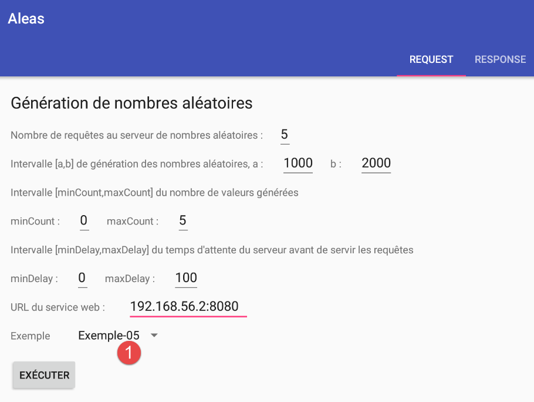
und erhalten folgende Ergebnisse:
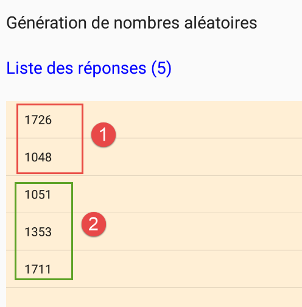
- in [1] die geraden Zufallszahlen; in [2] die ungeraden;
9.3.8.6. Weiter
Der Leser ist nun eingeladen, eigene Beispiele zu erstellen und auch mit verschiedenen Werten für die Eingaben in der Form zu experimentieren, die die an den Zufallszahlenserver gesendeten Anfragen konfiguriert.
9.3.9. Fazit
Wir haben die folgende Architektur in der Android-Umgebung erstellt:
Der Android-Client:
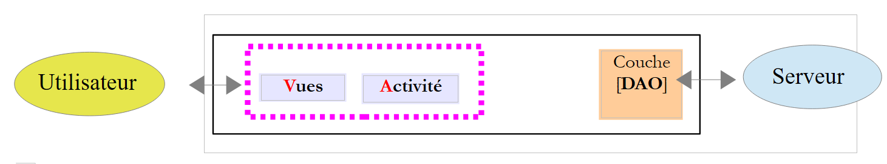 |
Die [DAO]-Schicht kommuniziert mit dem Server, der die auf dem Android-Tablet angezeigten Zufallszahlen generiert. Dieser Server verfügt über die folgende zweischichtige Architektur:
 |
Die [DAO]-Schicht stellte n HTTP-Anfragen an den Zufallszahlenserver, und die [swing]-Schicht wartete asynchron auf die Ergebnisse dieser Anfragen, um sie anzuzeigen. Diese n HTTP-Anfragen wurden an denselben Server gestellt, der die gleichen Arten von Antworten zurückgab. Dadurch konnten wir die Antworten zu einem einzigen Observable zusammenführen.
In der Praxis kommunizieren Android-Anwendungen mit verschiedenen Servern, und wir werden deren Antworten wahrscheinlich nicht zusammenführen. HTTP-Anfragen an diese Server werden unabhängig voneinander verarbeitet, und ihre Ergebnisse werden mithilfe separater Methoden beobachtet.